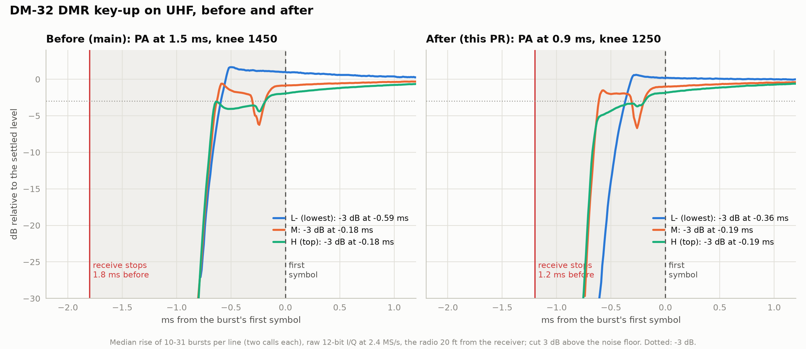
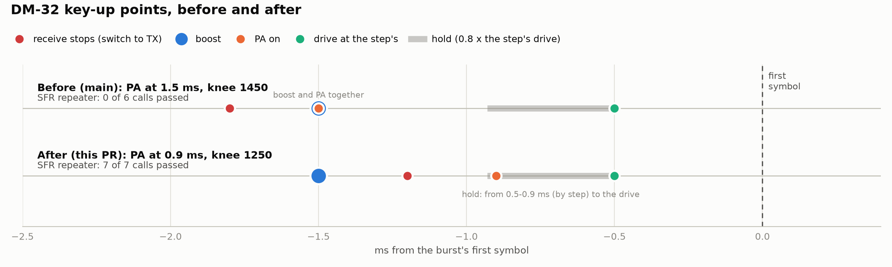

Baofeng DM-32UV hardware
This page covers what is needed to bring up the DM-32UV: SoC, memory, peripherals, pins, RF chip, audio, flash,
calibration, GPS and the update paths. The DMR modem inside the SoC is in modem-hrc7000.md. The AMBE codec placement
is in codec-dm32.md. What has been checked on the radio is in feature-matrix.md and
dm32-bringup.md.
Values are the ones RadioFoundry uses. "(measured)" marks a value measured on a radio, "(datasheet)" one from the HR_C7000 user guide (v2.7, 2016) alone, and "(unverified)" one not confirmed on a radio.
| Section | Topic |
|---|---|
| 1, 2 | SoC, clocks, boot, memory map |
| 3, 4 | Peripheral blocks (UARTs, SPI, I2C, RTC, timers, watchdog, PWM, ADC, DAC, GPIO, LCD controller, USB), interrupts |
| 5, 6 | Pin map, keys, encoder, LEDs, power |
| 7, 8 | LCD panel, FD6818 RF transceiver, DMR PA timer, air band AM |
| 9, 10, 11 | Audio path, data flash, factory calibration |
| 12, 13, 14 | GPS, firmware file format and update paths, other chips |
| 15, 16, 17 | Codec placement, open items, how RadioFoundry uses the SoC and the stub |
1. SoC
| Item | Value |
|---|---|
| SoC | Hongruan HR_C7000, sold by Dahua as DH4570 |
| CPU | C-SKY CK803S (32-bit, little endian, 16/32-bit mixed instruction set); toolchain target -mcpu=ck803s |
| ELF e_flags that make objdump decode CK803 32-bit opcodes | 0x21002009 |
| Interrupt controller | Dahua PIC at 0x17000000, 64 sources, normal interrupts only (no fast interrupts on C7000) |
| Crystal | 24 MHz system crystal; 32.768 kHz RTC crystal with coin cell backup |
| DMR/FM baseband | on chip ("modem", registers at 0x11000000, buffers at 0x16000000) |
| Audio codec | on chip (byte registers at 0x160009C0) |
1.1 Clocks and PLL (at boot, before anything else)
All registers are in the modem/system block at 0x11000000. The sequence below is RadioFoundry's. The resulting 168 MHz core clock matches what the UART divisors and timers assume.
| Step | Register (offset) | Write / wait | Meaning |
|---|---|---|---|
| 1 | SYS_SOFT_RSTN (0x000) | 0x180 | CPU and system out of reset (bits 8, 7); modem sub-blocks held (low-active resets per the datasheet) |
| 2 | QUAD_ENABLE (0x05C) | 0x01000001 | XIP flash controller (LCSFC) quad mode on, input sample delay 1 |
| 3 | LCSFC_BAUDR (0x030) | 0x02 | XIP flash SCLK divider (reset default 4) |
| 4 | CLK_MGR 0x010 | clear bits 23:0, then set refdiv=1 at bit 18, fbdiv=28 at bits 6+, postdiv1=2 at bits 5:3, postdiv2=2 at bits 2:0 | 24 MHz / 1 x 28 = 672 MHz VCO, / 2 / 2 = 168 MHz |
| 5 | CLK_MGR 0x028 | (7 << 16) or 6 | Datasheet field meanings: bits 4:0 usb_clk_div_num = 6, USB clock = BPLL VCO / 2 / (6 + 1) = 48 MHz; bits 20:16 sdio_clk_div_num = 7, SDIO 2x clock = VCO / 2 / 8 = 42 MHz |
| 6 | CLK_MGR 0x024 | clear bits 3:0, set bit 1 | PLL:AHB = 1:1. Every peripheral divisor assumes APB = 84 MHz (sys / 2) |
| 7 | CLK_MGR 0x004 | set bits 1:0 | release APLL / BPLL reset |
| 8 | CLK_MGR 0x004 | poll bit 31 every 100 us | PLL locked |
| 9 | CLK_MGR 0x004 | clear bit 2, then bit 3 | switch the system clock from the 24 MHz oscillator to the PLL |
| 10 | CLK_MGR 0x004 | poll bit 30 every 100 us | switch done |
| 11 | CLK_MGR 0x02C | 0xFFFFFFFF | all peripheral clock gates on |
| 12 | IO_DIPLEX2 (0x03C) | clear bits 1:0 | CLK_OUT pin = PLLA clock out (datasheet: 0 = PLLA) |
Resulting clocks used everywhere below: CPU/AHB 168 MHz, APB 84 MHz (timers, UARTs, SPI, I2C), SoC reference 24 MHz. Soft reset of the whole chip: QUAD_ENABLE = 0, then SYS_SOFT_RSTN = 0 (it turns the watchdog off; RadioFoundry restarts by a watchdog reset instead, 3.5). The soft reset keeps LCSFC_BAUDR: after a session at divider 2 the ROM and bootloader can't read flash in single-bit mode and the radio stays dark until a power cycle. Set LCSFC_BAUDR = 4 before the reset (measured).
The Baofeng bootloader starts the PLL itself but leaves the XIP controller in single-bit mode at the reset divider (QUAD_ENABLE = 0, LCSFC_BAUDR = 4). Steps 2 and 3 must run anyway. Measured, 11.5 KB of straight-line code from flash: 2.9 ms as left, 0.9 ms with quad mode, 0.48 ms with quad mode and divider 2. Before the fix the idle radio used about 80% of the CPU and DMR voice encoding could not keep up (measured). The rule is gotchas.md 2.7.
1.2 Boot header and start-up
| Item | Value |
|---|---|
| ROM boot flow | After reset the ROM offers a serial download window; if no host answers it checks flash address 0 for the Dahua flag and jumps to the 32-bit address stored at flash offset 0x04 |
| Dahua flag bytes | 0x74 0x68 0x64 0x0C (thd\x0c), followed by the little-endian entry address; also present in the miniBoot image (entry 0x00015C7C) and in the vendor application image |
| Where an app needs it | Only an image that sits at flash 0. Apps started by the Baofeng bootloader at 0x0300C000 do not carry it (they start directly with code) |
| Initial PSR | 0x80000100 (supervisor mode, exceptions enabled) |
| Stack top | 0x00057FFC |
| Vector base | VBR points at a 1 KB aligned table copied into RAM (boards/dm32/memory.ld: VBR = 0x10000) |
| Start-up copies | .data and RAM code from flash to SRAM 0x10000+; codec tables to modem SRAM 0x18000800 (see section 2) |
1.3 Cache controller (set before running from XIP flash)
Controller at 0xE000F000:
| Order | Address | Write | Meaning |
|---|---|---|---|
| 1 | 0xE000F004 | 0x1 | invalidate all |
| 2 | 0xE000F000 | 0x04 | write-back, 4-way, instruction and data cached |
| 3 | 0xE000F008 | 0x0300002D | cacheable region base 0x03000000, size code 0x2D (8 MB) |
| 4 | 0xE000F000 | set bit 0 | enable |
2. Memory map
| Range | Size | What |
|---|---|---|
| 0x00010000 – 0x00057FFF | 288 KB | Main SRAM ("IRAM"): data, bss, heap, stacks, RAM-resident code |
| 0x03000000 – 0x030FFFFF | 1 MB | Program flash (GD25Q80 class, 1 MB), memory-mapped, execute in place through LCSFC |
| 0x03000000 – 0x0300BFFF | 48 KB | Baofeng bootloader (PTT + SK1 update mode). Never overwrite when using the Baofeng update path |
| 0x0300C000 | Application base (APP_BASE): what the Baofeng bootloader writes and starts |
|
| 0x03001000 | Application base for the ROM serial boot script (overwrites the Baofeng bootloader area) (unverified) | |
| 0x03061000 | 76577 B | Where a codec linked to run in place sits; an app using it must end below |
| 0x030C1000 – 0x030D16D8 | Codec code load image of a codec copied to RAM at boot (codec-dm32.md) |
|
| 0x030D16D8 – 0x030D5478 | Codec tables, copied to 0x18000800 |
| 0x04000000 | | LCSFC flash controller register window (FLASH_SPI_BASE; not used directly) |
| 0x11000000 – 0x1100FFFF | | Modem / system registers (clock, reset, IO mux, baseband) |
| 0x12000000 – 0x1200FFFF | | i8080 LCD controller |
| 0x13000000 – 0x1303FFFF | 256 KB | USB 1.1 full-speed device controller (Synopsys DesignWare OTG core built device-only). Present on the SoC but the DM-32UV has no USB data connector and no firmware uses it (3.11) |
| 0x14000000 – 0x1415FFFF | | APB peripherals (section 3) |
| 0x15000000 | | SDIO |
| 0x16000000 – 0x1600FFFF | | Modem buffer RAM (DMR TX/RX RAM, AMBE voice RAM, prompt FIFO, codec registers; modem-hrc7000.md) |
| 0x17000000 | | PIC |
| 0x18000000 – 0x18007FFF | 32 KB | SRAM on the system AHB, shared with the modem |
| 0x18000000 – 0x1800009F | 160 B | Microphone PCM for the encoder (written by hardware) |
| 0x180000A0 – 0x1800013F | 160 B | Decoded PCM for the speaker (written by the CPU) |
| 0x18000800 – 0x18007FFF | 30 KB | Free for software; the codec's tables are copied to 0x18000800 (up to 0x18004BFC for the largest) |
| 0xE000F000 | | Cache controller |
| 0xE000E000 | | C-SKY core timer (not used) |
Flash file offset in a Baofeng firmware update file = runtime address − 0x0300C000 + 0x100.
3. Peripheral base addresses
| Base | Block | Notes |
|---|---|---|
| 0x14000000 | Timers 1–6 (DesignWare style), 0x14 bytes each | Timer 1 at +0x00, 2 at +0x14, 3 at +0x28, 4 at +0x3C |
| 0x14010000 | Watchdog | |
| 0x14020000 | GPIO A (pins 0–31) | |
| 0x14030000 | UART0 | programming cable |
| 0x14040000 | UART1 | GPS |
| 0x14050000 | UART2 | unused |
| 0x14060000 | I2C0 | ALPU-MP (hardware I2C selected by the IO mux) |
| 0x14070000 | I2C1 | pins used as GPIO for the FD6818 instead |
| 0x14080000 | I2C2 | internal: the RTC sits on it |
| 0x14090000 | UART3 | unused |
| 0x140A0000 | SPI master 0 (DesignWare SSI) | 16 MB data flash |
| 0x140B0000 | SPI master 1 | unused |
| 0x140C0000 | PWM | LCD backlight |
| 0x140D0000 | ADC controller | |
| 0x140E0000 | SPI2 | unused (shares LCD pins) |
| 0x140F0000 | DAC controller (3 channels) | The manual's register table header says 0x140D0000; the memory map and RadioFoundry use 0x140F0000 |
| 0x14100000 | GPIO B (pins 32–63) | |
| 0x14110000 | GPIO C (pins 64–95) | |
| 0x14120000 – 0x14140000 | SPI slaves 0–2 | unused |
| 0x14150000 | SPI master 3 | eFuse only |
3.1 UARTs (16550 style)
Registers at base +: RBR/THR/DLL 0x00, DLH/IER 0x04, IIR/FCR 0x08, LCR 0x0C, LSR 0x14, USR 0x7C.
| Item | Value |
|---|---|
| Divisor | APB / 16 / baud, APB = 84 MHz (115200 → 45, 1.3 % fast; 9600 → 546) |
| Divisor latch | LCR bit 7 set, write DLL then DLH, clear bit 7 |
| Format | LCR |= 0x03 (8N1) |
| FIFO | FCR = 0x67: FIFOs enabled and reset, RX trigger 4 characters (bits 7:6 = 01; fewer arrive by the character time-out), TX trigger 4 characters (bits 5:4 = 10) |
| FIFOs | 16 bytes each (the FCR trigger levels: RX 1, 4, 8, 14; TX empty, 2, 4, 8). TFL (0x80) and RFL (0x84) count what each holds |
| TX ready | USR bit 1 (TX FIFO not full) |
| TX interrupt | IER bit 1 (ETBEI) with bit 7 (PTIME): IIR ID 0010 while the TX FIFO holds the FCR TX trigger level or less; cleared by filling it above that, or by reading IIR. The host port sends this way: the host link task hands its buffer to the interrupt and sleeps until it is sent (platform/hrc7000/uart.c). Sent by polling at the host task's priority, a long reply during a DMR transmission kept the idle task out until the hang check reset the radio, and ran at a third of the line's speed |
| RX ready | LSR bit 0 |
| Interrupts | GPS uses IER = 0x05 (RX data + line status); on stop, IER = 0 and FCR bits 1, 2 to flush |
| UART0 | 115200 8N1: programming cable (Baofeng CPS, open-firmware CPS, hotspot). RadioFoundry's host port, where a CPU fault's trace lines appear (crash-log.md 2.3) |
| UART1 | 9600 8N1: GPS RX only |
A reset with the host polling left the debug link deaf until a power cycle (bench 2026-10-22; quiet resets came back every time): the host
was still sending, the divisor write was dropped while the UART was busy, and the low divisor byte went out as data. Every UART set-up
(platform/hrc7000/uart_format.h) therefore drains the RX FIFO, writes, reads LCR, DLL and DLH back and tries again until they stick (about
100 ms at most). The general rule is gotchas.md 2.8.
3.2 SPI master (DesignWare SSI)
Registers at base +: CTRLR0 0x00, CTRLR1 0x04, SSIENR 0x08, SER 0x10, BAUDR 0x14, TXFTLR 0x18, RXFTLR 0x1C, TXFLR 0x20, RXFLR 0x24, SR 0x28, IMR 0x2C, ISR 0x30, DMACR 0x4C, IDR 0x58, version 0x5C, DR 0x60.
Set-up used for the data flash, in order:
- SSIENR = 0.
- CTRLR0 = 0x07 (8-bit frames, mode 0, TX/RX), CTRLR1 = 0.
- BAUDR = 2 (APB / 2 = 42 MHz SCLK).
- Thresholds 0, IMR = 0, DMACR = 0.
- SSIENR = 1.
Per byte: wait for SR bit 1 (TX not full), write DR, wait for SR bit 2 (TX empty), wait for SR bit 0 to clear (not busy), read DR. SER is 1 during the transfer and 0 after it. Chip select is also driven by hand on GPIO 18 (see 8.1).
3.3 I2C2 and the internal RTC
The RTC hangs off the internal I2C2 at 7-bit address 0x70 (datasheet: device address 1110000b; TAR = 0x70).
I2C2 set-up: ENABLE = 0; CON = 0x65; INTR_MASK = 0x40; FS_SCL_HCNT = 0x61; FS_SCL_LCNT = 0x68; TX_TL = RX_TL = 6. Registers at base +: CON 0x00, TAR 0x04, DATA_CMD 0x10, FS_SCL_HCNT 0x1C, FS_SCL_LCNT 0x20, INTR_MASK 0x30, RX_TL 0x38, TX_TL 0x3C, CLR_INTR 0x40, ENABLE 0x6C, STATUS 0x70, ENABLE_STATUS 0x9C, and a non-standard START at 0xA0.
Write of one RTC register: ENABLE = 0, read CLR_INTR, TAR = 0x70, ENABLE = 1, DATA_CMD = register, DATA_CMD = value, START = 1, wait STATUS & 0x05 == 0x04, START = 0, ENABLE = 0, wait ENABLE_STATUS bit 0 clear. Read: drain RX FIFO (STATUS bit 3), same opening, DATA_CMD = register, DATA_CMD = 0x100 (read), START = 1, wait STATUS bit 3, read DATA_CMD.
| RTC register | Use |
|---|---|
| 0x00 / 0x01 / 0x02 | current seconds / minutes / hours (6, 6, 5 bits) |
| 0x03 / 0x04 | current day count, low / high byte (16 bits, days since an epoch the firmware chooses) |
| 0x0C / 0x0D / 0x0E | load seconds / minutes / hours |
| 0x0F / 0x10 | load day low / high |
| 0x11 | RTC_CCR: bit 0 interrupt enable, bit 1 run, bit 2 load (self clearing); RadioFoundry writes 0x07 |
| 0x12 | RTC_LOAD_VSTAT bit 0: set to 0 before loading, 1 after (marks the time valid) |
Datasheet first-power-up order: reset the RTC I2C interface, soft-reset the RTC (RTC_SOFT_RST_N = 0, wait 25 ms, = 1), optionally set the match (alarm) registers, load time, CCR.
3.4 Timers
DesignWare-style, clocked from APB 84 MHz. Per timer: LOADCOUNT +0x00, CURRENTVALUE +0x04, CONTROLREG +0x08, EOI +0x0C (read to clear), INTSTATUS +0x10.
CONTROLREG: bit 0 enable, bit 1 user-defined (periodic reload) mode, bit 2 interrupt mask (0 = interrupt on). Start: CONTROLREG = 0x02, LOADCOUNT = 84 000 000 / Hz, CONTROLREG |= 0x01.
| Timer | Vector | Use |
|---|---|---|
| 1 (0x14000000) | 33 | RTOS tick (TIMER_TICK, started by the FreeRTOS port) |
| 2 (0x14000014) | 34 | Free-running system clock (TIMER_CLOCK) |
| 3 (0x14000028) | 35 | DMR PA one-shot (TIMER_PA) |
| 4 (0x1400003C) | 36 | APRS AFSK: tops up the prompt FIFO (TIMER_AFSK) |
| 5 (0x14000050) | 37 | Board sequence waits (TIMER_BOARD), including DMR RF burst timing |
| 6 (0x14000064) | 38 | Speaker PCM FIFO readiness and deferred settling/write (TIMER_PCM) |
3.5 Watchdog (0x14010000)
LOCK +0x00, OT_LOAD_H +0x04, OT_LOAD_L +0x08, RST_LOAD +0x0C, EN +0x10, KNOCK +0x14. Unlock key 0x5ADA7200, feed value 0x55AADD22. Disable: LOCK = 0x5ADA7200, EN = 0, LOCK = 0. Whether the Baofeng bootloader leaves it running is unknown.
From the HR_C7000 manual (document 2, WDT registers and the reset chapter): LOCK reads 1 while locked (its reset
value) and 0 while open; any value but the key locks it. OT_LOAD_H is 3 bits (2:0) over the 32 of OT_LOAD_L: one
35-bit start value the counter counts up from, the timeout being its overflow at 2^35 (reset values H = 7, L =
0xC0000000: about 60 s). RST_LOAD (24:0, reset value 0x03F80000) counts on to 0x03FFFFFF before the reset, about 20
ms. EN is the only switch: no interrupt, no mode bit, no other enable; the watchdog reset is a global reset. The
counter runs at the 24 MHz crystal (another HR_C7000 board, measured: H = 7, L = 0xF0000000, 2^28 counts, reset after 11.1 s). A soft
reset clears EN. A watchdog reset keeps EN and both loads, and the counter starts again from the load (another HR_C7000
board: armed at 32 s before a soft reset, it was off at main(); armed with a 1 ms load, the chip reset
every 23 ms inside the boot ROM until a power cycle cleared it). RadioFoundry restarts by a watchdog reset
(watchdog.md 3). RadioFoundry (CONFIG_WATCHDOG, platform/hrc7000/watchdog.c) arms it after the clock set-up with
every write under LOCK: EN = 0, the loads, a feed, EN = 1. It feeds with LOCK = key, KNOCK = 0x55AADD22, LOCK = 0. The
load is 2^35 - 4 s x 24 MHz. The bench measurement and the
rest are in watchdog.md.
3.6 PWM (backlight)
PWM0: CFG +0x00, RPT +0x04, PER +0x08, FP +0x0C, STATUS +0x10. PWM0 comes out on PTA15 (= GPIO 0x0F, LCD backlight) when IO_DIPLEX0 bit 17 = 0. Dimmed mode: IO_DIPLEX0 bit 17 = 0, CFG = 0x328, PER = 0xC8 (200), FP = percentage, CFG = 0x32C, CFG = 0x32D. Full on or off: IO_DIPLEX0 bit 17 = 1 and drive GPIO 0x0F as an output. With PER = 200 and FP = 0..100 the duty only reaches about 50 % (unverified). Key backlight (GPIO 0x28) is on/off only.
3.7 ADC (0x140D0000)
10-bit, 8 channels A–H wired to ADC0_IN..ADC7_IN on PTC15..PTC22 when the IO mux selects them.
Registers: CTRL 0x00 (bit 3 soft reset, bit 2 continuous scan, bit 1 glitch filter, bit 0 low power), INTR_DELTA 0x04, INTR 0x08 (bit 16 + per-channel enables), INTR_STA 0x0C, START 0x14, CTRL_STATE 0x18, INTR_THRESHOLD 0x1C, CTRL_STOP 0x20, CH_VLD 0x24, PD_SEOC_TIME 0x28, P2S_EN 0x2C, DATA_AB 0x30 (A in 9:0, B in 25:16), DATA_CD 0x34 (C in 9:0, D in 25:16). In single scan only the lowest enabled channel is converted.
| Signal | How it is read | Scale |
|---|---|---|
| Battery | Single scan, CH_VLD = 0x04 (channel C = ADC2_IN), INTR = 0x10004, PD_SEOC_TIME = 0xA20, wait INTR_STA bit 2, DATA_CD bits 9:0 | volts × 10 = raw / 8.2 (so raw 672 = 8.2 V). RadioFoundry uses raw / 8.32: at 8.21 V by raw / 8.2 a meter on the pack read 8.09 V (2026-10-16). Thresholds used: 8.2 V full, 6.4 / 6.2 V low-battery hysteresis, 5.5 V power-off |
| Mic level (VOX) | CH_VLD = 0x05, INTR = 0x10005, reads DATA_CD bits 25:16 (channel D) | Suspect: single scan converts only channel A, and IO_DIPLEX2 leaves ADC0/ADC3 pins as GPIO, so this probably reads nothing useful |
| Volume knob | Not read at all (the variable for it is never written) | — |
IO_DIPLEX2 = 0x0FC80100 at boot leaves ADC1_IN and ADC2_IN analog (bits 20, 21 clear) and ADC0, ADC3..7 as GPIO (datasheet bit map). So the analog inputs available are channels B and C. Which one is the volume pot is unknown.
3.8 DAC (0x140F0000, 3 channels, 12-bit)
Registers: PD_CTRL 0x00 (bit n = 1 powers channel n down; A=0, B=1, C=2), PD_MODE_EN 0x04 (low-power mode per channel), DATA_A 0x08, DATA_B 0x0C, DATA_C 0x10. Output pins DAC_VOUT_MCUA/B/C on PTC23/24/25 when IO_DIPLEX2 bits 27/28/29 are 0.
| Channel | Use | Values |
|---|---|---|
| A | unused (powered down, pin left as GPIO) | 0 |
| B | PA drive / APC bias. 0 = PA off. TX value from the factory calibration (section 9), 0..4095 | fallback without calibration: 1408 |
| C | unknown analog control, set once | 0x06E2 at init |
At init RadioFoundry writes PD_CTRL = 0x01 (A off, B and C on), PD_MODE_EN = 0x01, clears IO_DIPLEX2 bit 28 (channel B pin to DAC). FM receive sets PD_CTRL bit 1 (B off); DMR and FM transmit must clear it again.
3.9 GPIO banks and the pin index scheme
Pin index 0–95: 0–31 GPIO A (PTA0–31), 32–63 GPIO B (bit = index − 32), 64–95 GPIO C (bit = index − 64). All tables below use this index (unverified).
Per bank (DesignWare APB GPIO): DR +0x00, DDR +0x04 (1 = output), INTEN +0x30, INTMASK +0x34, INTTYPE_LEVEL +0x38 (1 = edge), INT_POLARITY +0x3C (1 = rising/high), INTSTATUS +0x40, RAW_INTSTATUS +0x44, DEBOUNCE +0x48, PORTA_EOI +0x4C, EXT_PORTA +0x50 (input level), INT_BOTHEDGE +0x78.
Bank interrupt vectors: GPIO B = 46, GPIO A = 47, GPIO C = 49.
3.10 i8080 LCD controller (0x12000000)
| Offset | Use |
|---|---|
| 0x00 | write: command byte to the panel (RS low) |
| 0x04 | write: data byte to the panel (RS high) |
| 0x10 | configuration; RadioFoundry writes 0x303 |
| 0x28 | bit 0 enable (set), bit 1 ready (poll until 1 after enabling) |
The bus pins (CS, RS, WR, DB0–DB7) are handed to the controller by clearing IO_DIPLEX2 bits 3–7 and 9–18 (IO_DIPLEX2 &= 0xFFF80107). RD (PTC6) stays a GPIO held high; NRESET is GPIO 0x42. A short delay (a few cycles) after each byte is needed.
3.11 USB controller (present on the SoC, not usable on the DM-32UV)
Summary. The HR_C7000 has a USB 1.1 full-speed device controller, but the DM-32UV gives it nothing to talk to.
The USB-C socket people see is on the BC-32UV battery pack: it charges the pack through the pack's own charger,
with red (charging) and green (full) LEDs on the pack (per the battery listings; the USB-C cable in the box can't program the radio). The radio body has no USB connector; programming and
firmware updates use the two-pin K1 jack, which carries UART0 through a USB-serial cable. So RadioFoundry keeps
CONFIG_USB=n on this board. The controller facts below are kept for a future HR_C7000 radio that does wire the
USB pins, and to settle the question for good.
What the original firmware does with it
It does not use the controller. It builds no address in 0x13000000–0x1303FFFF, changes only bits 6 and 7 of CLK_MGR 0x02C (never bits 16/17, the USB gates), installs no handler for the USB interrupt (vector 53, PIC source 21) and carries no USB descriptors. Its "task usb" is the PC programming protocol on UART0, so the "USB" in the name is the USB-serial programming cable, not the controller; the protocol is in dm32-stock-cps.md. The UI has no charging state (only battery-low warnings). The Baofeng bootloader's update mode speaks the serial protocol of 13.2 on the same cable (unverified). The ROM boots from the serial port or SPI flash only; there is no USB boot mode.
Controller (datasheet, USB chapter)
| Item | Value |
|---|---|
| Core | Synopsys DesignWare USB 2.0 OTG core, configured as a non-OTG device. GSNPSID (0x040) reads 0x4F54270A (core release 2.70a); GUID (0x03C) resets to 0x45700322 |
| Speed and PHY | Full speed (12 Mbit/s) only, through a dedicated on-chip USB 1.1 FS transceiver. No high-speed PHY, no ULPI/UTMI. GUSBCFG.PHYSel (bit 6) is read-only 1 |
| Endpoints | 5 in all, with fixed directions: EP0 control (IN/OUT), EP1 IN, EP2 OUT, EP3 IN, EP4 OUT (GHWCFG1 = EP4 OUT, EP3 IN, EP2 OUT, EP1 IN, EP0 bidirectional). No extra control endpoints |
| TX FIFO mode | Dedicated TX FIFO per IN endpoint: FIFO 0 for EP0, two more for EP1 and EP3 (GHWCFG4.INEPs = 2, DedFifoMode = 1) |
| FIFO RAM | The overview says 128 entries in all (35-bit wide); GHWCFG3.DfifoDepth says 122 usable 32-bit words. Dynamic FIFO sizing is supported. The reset values do not fit: GRXFSIZ = 0x80, GNPTXFSIZ = depth 0x80 at 0x80, DIEPTXF1 = depth 0x80 at 0x100, the second IN FIFO at 0x180. Software must size all FIFOs inside 122 words; RX minimum 16 words |
| GUSRSTS (0x054, vendor) | Reports 0x10 words of RX FIFO reserved for control transfers and 0x70 available for the rest, plus the MAC state machine and last token PID (debug aid) |
| DMA | Internal (buffer) DMA available: GHWCFG2.OtgArch = 2, GAHBCFG.DMAEn (bit 5) selects slave (0) or DMA (1) mode. No scatter-gather (descriptor) DMA |
| Transfer counters | XferSize 11 bits (at most 2047 bytes per transfer), PktCnt 4 bits (at most 15 packets per transfer); EP0: XferSize 7 bits, PktCnt 2 bits |
| Other GHWCFG facts | No OTG (GHWCFG3.OtgEn = 0), no vendor-control or I2C interface, no power optimization (GHWCFG4.EnablePwrOpt = 0), AHB faster than 60 MHz (GHWCFG4.AhbFreq = 1), 8-bit PHY data width, asynchronous reset |
| Interrupt | PIC source 21, vector 53, level triggered, high active |
| Register window | 0x13000000–0x1303FFFF; FIFO push/pop windows at +0x1000 (EP0) to +0x5000 (EP4), one 4 KB window per endpoint as in the standard core |
Clocks, reset, pins, power
| Item | Value |
|---|---|
| Clock gates | CLK_MGR 0x02C (0x1100002C): bit 16 usb_clk_en (48 MHz PHY clock), bit 17 usb_hclk_en (AHB clock to the core); both reset to 0 (off). RadioFoundry's clock set-up writes 0x02C = 0xFFFFFFFF (1.1 step 11), which turns them on |
| 48 MHz clock | CLK_MGR 0x028 bits 4:0 usb_clk_div_num: USB clock = BPLL VCO / 2 / (n + 1); reset value 4. With the 672 MHz BPLL VCO of 1.1, n = 6 gives 48 MHz (CLK_MGR 0x010 is the BPLL configuration register) |
| Clock tree | The 48 MHz PHY clock is also gated by the core's suspend output, so it stops while the bus is suspended |
| Reset | No USB bit in SYS_SOFT_RSTN (0x11000000 bits 8:0 cover CPU, system, ADCs, codec, audio, FM, modem PHY and protocol). Reset the core with GRSTCTL.CSftRst (bit 0) and wait for it to clear; GRSTCTL.AHBIdle (bit 31) shows the AHB master is idle |
| DP / DM | Dedicated balls F1 (USB_DP) and F2 (USB_DM), 3.3 V signaling; no IO mux |
| Supply | USB_AVDD33, ball G3, 3.3 V; USB_AVSS33 analog ground |
| VBUS | No VBUS ball and no OTG session logic, so the controller cannot sense cable plug or unplug by itself. A design that wants plug detection needs a GPIO on VBUS, or watches the bus events (USB reset, suspend, early suspend) |
| Pull-ups | The pad has software-controllable D+ and D- pull-ups: GGPIO (0x038) bits 29:28 D+ pull-up (0/1 = driven by the core, 2 = forced on, 3 = forced off), bits 27:26 a second D+ pull-up, bits 25:22 the D- pull-ups, bit 21 pull-down enable. No external pull-up or GPIO is needed for soft connect (unverified) |
| Soft connect / disconnect | DCTL.SftDiscon (bit 1): 1 = disconnected, 0 = connect. GGPIO's forced pull-up settings are a second method |
| Pad power | GGPIO bit 16 PADPowerDown: 0 = transceiver powered (reset value), 1 = off. Bit 19 PADSpeed (1 = FS, reset), bit 30 PADRcvEn differential receiver (1 = on, reset), bits 18:17 suspend control |
| Board wiring on the DM-32UV | Not known whether F1/F2 leave the BGA at all. With no connector for them, using USB on this radio would mean soldering to the BGA nets, which is not practical |
Register map against the standard DWC2 layout (what a TinyUSB dwc2 port has to know)
The documented registers sit at the standard offsets (GAHBCFG 0x008, GUSBCFG 0x00C, GRSTCTL 0x010, GINTSTS 0x014, GINTMSK 0x018, GRXSTSR/P 0x01C/0x020, GRXFSIZ 0x024, GNPTXFSIZ 0x028, GHWCFG1–4 0x044–0x050, DCFG 0x800, DCTL 0x804, DSTS 0x808, DIEPMSK 0x810, DOEPMSK 0x814, DAINT 0x818, DAINTMSK 0x81C, DTHRCTL 0x830, DIEPEMPMSK 0x834, DIEPCTLn 0x900 + 0x20n, DOEPCTLn 0xB00 + 0x20n, PCGCCTL 0xE00). The differences:
| # | Difference | What to do |
|---|---|---|
| 1 | Endpoint directions are fixed in hardware (EP1/EP3 IN, EP2/EP4 OUT) | Descriptors may only use 0x81, 0x02, 0x83, 0x04. One CDC-ACM interface fits exactly: notification IN on 0x81 or 0x83, data IN on the other, data OUT on 0x02; EP4 OUT is spare. A composite device beyond that does not fit |
| 2 | Only two IN TX FIFO size registers after FIFO 0: 0x104 (the manual's "DIEPTXF1", for EP1) and 0x108 (the manual's "DIEPTXF3", for EP3). In the standard layout 0x108 is TX FIFO 2 | A driver that sets DIEPCTLn.TxFNum = n and writes DIEPTXF at 0x104 + 4(n − 1) would use the nonexistent 0x10C for EP3. Give EP3 TX FIFO 2 (DIEPCTL3.TxFNum = 2, size in 0x108); confirm on hardware |
| 3 | 0x038 is GGPIO (vendor pad control), not STM32's GCCFG. Bit 16 is PADPowerDown (1 = off), the opposite sense of GCCFG.PWRDWN (1 = on) | Never run STM32-style PHY set-up (setting GCCFG.PWRDWN or the VBUS-sensing bits) on this core: it would power the transceiver down. Leave 0x038 at its reset value or write only the pull-up fields |
| 4 | No GOTGCTL / GOTGINT (0x000 / 0x004 not documented), no OTG, no VBUS sensing | No B-session override is needed or possible; skip VBUS-sense configuration |
| 5 | GUSBCFG bits 30:29 (force host / force device) are "not used": the core is device-only | Writing ForceDevMode is harmless; no mode switch wait is needed |
| 6 | DCFG.DevSpd encodings: 3 = FS with the 48 MHz USB 1.1 PHY clock (the one to use here); 1 = FS on a USB 2.0 PHY (not present); 2 = LS | Set DevSpd = 3. DSTS.EnumSpd reports with the same encoding |
| 7 | GUSBCFG.USBTrdTim (bits 13:10) resets to 5; TOutCal (bits 2:0) resets to 0 | 5 is the usual full-speed value; keep it |
| 8 | FIFO RAM is 122 words and the reset FIFO map overlaps it (see above) | Size explicitly at init, for example RX 64 words, TX0 16, TX1 16, TX2 16 (112 words in all); check against the driver's own formula |
| 9 | 4-bit packet counter, 11-bit transfer size | Make sure the driver splits transfers at 15 packets (960 bytes at 64-byte packets) and 2047 bytes, either by reading GHWCFG3 or by a board limit |
| 10 | Buffer DMA works through the core's AHB master; which RAM it can reach is not documented | Start in slave mode (DMAEn = 0). Try DMA only after checking it can reach the RAM the buffers live in |
| 11 | Dedicated FIFO "TxFEmp" level: GAHBCFG bit 7 (0 = half empty, 1 = completely empty) | Standard meaning |
Open questions for the first hardware test
These need only the debug link on UART0 and a host computer; nothing here transmits.
- Plug a USB-C cable from a computer into the battery pack with the radio on and off. Expected: the pack's charge
LED lights and no USB device appears on the host (macOS: System Information, USB; Linux:
lsusb). If any device does appear, report its VID:PID and product string: that would mean the pack or the radio has a USB data path we don't know about. - With RadioFoundry running, read CLK_MGR 0x02C and GSNPSID (0x13000040) through the debug link once a register-peek command exists. Expected 0x4F54270A with the USB gates on; this confirms the core is present and clocked on this die revision.
- Read CLK_MGR 0x02C before RadioFoundry's clock set-up runs, to learn whether the Baofeng bootloader leaves the USB gates on.
- Optional, only if the radio is opened for another reason: look for test pads or vias near the SoC on the USB_DP / USB_DM nets (balls F1/F2). Report a photo; don't probe them live.
4.1 PIC (0x17000000)
| Offset | Register | Use |
|---|---|---|
| 0x00 / 0x60 | PIC_MODE / PIC_MODE_1 | sources 0–31 / 32–63: 1 = edge, 0 = level (reset all edge) |
| 0x04 / 0x64 | PIC_PO / PIC_PO_1 | polarity |
| 0x08 / 0x68 | PIC_MASK / PIC_MASK_1 | 1 = masked (reset all masked) |
| 0x0C | PIC_VECTOR | vector base |
| 0x10 | PIC_COW1 | end of interrupt: write 0x04 at the start of every handler |
| 0x14–0x30, 0x6C–0x88 | PIC_PRIORn | per-source priority counters (smaller = higher) |
| 0x3C / 0x8C | PIC_FFLAG_L / H | fast-interrupt select (not supported on C7000) |
| 0x44 / 0x48 | PIC_INT_ST / _1 | request record, write 1 to clear |
Init used: MODE = 0 (level), PO = 0xFFFFFFFF (high active), MASK = 0xFFFFFFFF, the same for the _1 registers, INT_ST = INT_ST_1 = 0xFFFFFFFF. (Both masks must be written at init; the reset value is all masked.) Enabling vector v: clear bit (v − 32) in PIC_MASK for v < 64, bit (v − 64) in PIC_MASK_1 for v ≥ 64.
Level mode still acts on the line rising (measured with timer 6, source 6, through the debug link's SoC register access, debuglink.md 3.24): a rise while the source is masked sets its INT_ST bit and is delivered when it is unmasked; after the request is taken, a line still high does not interrupt again, unmasked and with the INT_ST bit still set, until it falls and rises. A handler must clear its device's cause, or the source stays silent (gotchas 2.9).
Dispatch: all 64 user vectors (32–95) point at one common entry; it saves context, writes 0x04 to PIC_COW1, takes the vector number from PSR bits 23:16, subtracts 32 and calls through a 64-entry software table.
4.2 Vector table
Vectors 0–31 are C-SKY exceptions: 0 reset, 1 misaligned access, 2 access error, 3 divide by zero, 4 illegal instruction, 5 privilege violation, 6 trace, 7 breakpoint, 8 unrecoverable error, 9 soft reset, 10 normal interrupt, 11 fast interrupt, 12 hardware accelerator, 16–19 trap 0–3. User interrupts are vector = PIC source + 32 (datasheet table 30), all level-triggered, high active:
| Source | Vector | Interrupt | Used by |
|---|---|---|---|
| 1–6 | 33–38 | TIMER_1 .. TIMER_6 | see 3.4 |
| 7 / 8 / 9 | 39 / 40 / 41 | I2C1 / I2C0 / I2C2 | — |
| 10 | 42 | UART1 | GPS receive |
| 11 | 43 | UART2 | — |
| 12 | 44 | UART0 | programming cable (CPS, hotspot) |
| 13 | 45 | UART3 | — |
| 14 | 46 | GPIO B | rotary encoder (and every other GPIO B input with its interrupt enabled, see 16) |
| 15 | 47 | GPIO A | — |
| 16 | 48 | SPI0 | — |
| 17 | 49 | GPIO C | — |
| 18 / 19 / 20 | 50–52 | PWM / RTC / SDIO | — |
| 21 | 53 | USB (level, high active) | not used (3.11) |
| 22 / 23 / 24 | 54–56 | SPI1 / SPI2 / LCSFC | — |
| 25 / 26 | 57 / 58 | DAC / ADC | — |
| 27 | 59 | PCM_rd_data_interp: decoded-audio buffer read, every 10 ms | speaker PCM refill |
| 28 | 60 | PCM_wr_data_interp: mic PCM buffer full | (cleared only) |
| 29 | 61 | System_inter (modem system interrupt) | DMR frame received etc. |
| 30 | 62 | Time_slot_inter_tx (30 ms TX slot) | DMR TX burst scheduling |
| 31 | 63 | Time_slot_inter_rx (30 ms RX slot) | DMR RX scheduling |
| 32 | 64 | Rf_tx_inter (RF TX start, ahead of a burst) | key the FD6818 to TX |
| 33 | 65 | Rf_rx_inter (RF RX start) | unused |
| 34–36 | 66–68 | SPI slaves | — |
| 37 | 69 | Codec_interp | unused |
The four modem interrupts are masked as a group by PIC_MASK bits 29–31 and PIC_MASK_1 bit 0 (datasheet mapping). PIC_MASK_1 bits 29–31 are vectors 93–95 and mask nothing here.
5. Pin map
Index = GPIO pin index (3.9). "Dir" is as configured; "Act" is the active level. The USB pins are dedicated balls, not GPIOs, and have no IO mux setting: USB_DP ball F1, USB_DM ball F2, USB_AVDD33 (3.3 V) ball G3, USB_AVSS33 analog ground. Whether F1/F2 are routed anywhere on the DM-32UV board is unknown (3.11).
| Index | Port pin | Function | Dir | Act / notes |
|---|---|---|---|---|
| 0x00–0x04 | PTA0–4 | JTAG TMS, TCK, TDI, TDO, RST_N | — | IO_DIPLEX0 bits 4:0 = 0 keeps JTAG |
| 0x05 / 0x06 | PTA5 / 6 | ALPU-MP I2C SCL / SDA (I2C0 hardware) | — | IO_DIPLEX0 bits 5, 6 = 0 |
| 0x07 | PTA7 | FD6818 serial clock (bit-banged) | out | |
| 0x08 | PTA8 | FD6818 serial data (bit-banged, bidirectional) | in/out | |
| 0x09 | PTA9 | UART1 RXD ← GPS TXD | in | IO_DIPLEX0 bit 9 = 0 |
| 0x0F | PTA15 | LCD backlight (GPIO or PWM0) | out | high = on |
| 0x10 | PTA16 | Power switch monitor | in | 1 = knob turned off |
| 0x11 | PTA17 | Power latch | out | 1 = keep power on; 0 = power off |
| 0x12 | PTA18 | Data flash chip select (SPI0 CS0 as GPIO) | out | low = selected |
| 0x14 / 0x15 / 0x16 | PTA20 / 21 / 22 | Data flash SCLK / MOSI / MISO (SPI0 master) | — | IO_DIPLEX1 bits 8:3 = 0 |
| 0x17 | PTA23 | SPI1 CSN0 | — | unused |
| 0x18 | PTA24 | FD6818 chip select | out | low = selected |
| 0x19 / 0x1A | PTA25 / 26 | RDA5807M broadcast FM receiver SDIO / SCLK | — | not used by any firmware seen |
| 0x20 | PTB0 | Green LED | out | high = on; color checked on a radio at bring-up (measured) |
| 0x21 | PTB1 | Red LED | out | high = on; color checked on a radio at bring-up (measured) |
| 0x22 | PTB2 | VHF LNA / RX supply (R5_V) | out | high = on |
| 0x23 | PTB3 | UHF PA select | out | high = on |
| 0x24 | PTB4 | UHF LNA / RX supply (R5_U) | out | high = on |
| 0x26 / 0x27 | PTB6 / 7 | Rotary encoder B / A | in | |
| 0x28 | PTB8 | Keypad backlight | out | high = on |
| 0x2B | PTB11 | PTT | in | low = pressed |
| 0x2C | PTB12 | GPS power | out | low = GPS on, high = off |
| 0x2E | PTB14 | Audio path select: mic to analog FM path vs to DMR codec | out | 1 = analog (FM TX), 0 = DMR; set at each TX start |
| 0x2F | PTB15 | FD6818 audio switch | out | 1 = the FD6818's audio output to the speaker and away from the C7000's ADC; 0 = the audio into the C7000 (DMR receive needs this) and the speaker on the codec (measured) |
| 0x31–0x34 | PTB17–20 | Keypad columns 1–4 | in | low = key closed |
| 0x35 | PTB21 | Audio power amplifier enable | out | high = on |
| 0x37 | PTB23 | VHF PA select | out | high = on |
| 0x3A / 0x3B | PTB26 / 27 | FD6818 GPIO1 / GPIO0 | in | function unknown (configured as inputs with interrupts) |
| 0x42 | PTC2 | LCD NRESET | out | low = reset |
| 0x43–0x46 | PTC3–6 | LCD CS, RS, WR, RD | — | i8080 controller (RD as GPIO high) |
| 0x47–0x4B | PTC7–11 | LCD DB0–DB4, shared with keypad rows 0–4 | — | |
| 0x4C–0x4E | PTC12–14 | LCD DB5–DB7 | — |
5.1 IO mux and pull set-up at boot
| Register (0x11000000 +) | Value | Effect |
|---|---|---|
| IO_DIPLEX0 (0x034) | 0xFFFDFD80 | JTAG and I2C0 as peripherals; PTA7/8 GPIO; UART1 RXD on PTA9; PWM0 on PTA15; rest GPIO |
| IO_DIPLEX1 (0x038) | 0xFFFFFE07, then |= 0x38000000 | SPI0 SCLK/MOSI/MISO to the SPI master; CS0, SPI1 and the modem interrupt-out pins as GPIO |
| IO_DIPLEX2 (0x03C) | 0x0FC80100 | LCD bus pins as GPIO until the display init hands them over; ADC1/ADC2 analog; DAC B/C outputs |
| IOMGR_REN_REG0 (0x040) | 0xFFFBFFEF, then &= 0xFEFFFFFF | pull-down enables (0 = pull enabled); exact per-pin meaning not mapped |
| IOMGR_REN_REG1 (0x044) | 0x00FFFFFF | |
| IOMGR_REN_REG2 (0x048) | 0x0FFFFF70, then |= 0x0C000000 | |
| GPIOA_DDR / GPIOB_DDR / GPIOC_DDR | 0x070604E0 / 0x00A0D01F / 0x00007FC4 | |
| GPIOA_DR |= 0x0060; GPIOB_DR = 0x0000C005; GPIOC_DR |= 0x7044 | initial levels (power latch, LCD control high etc.) |
Then individually: audio path pin 0x2E = 1; rows 0x47–0x4B = 1; LCD DB6 (0x4D) = 0; power monitor 0x10 input; power latch 0x11 = 1; flash CS 0x12 = 1; columns 0x31–0x34 inputs; PTT 0x2B input; LNA and PA selects (0x22, 0x24, 0x37, 0x23) = 0; FD6818 GP0/GP1 inputs.
Transmitter safe state (board_rf_safe, crash-log.md 8), at every fault, reset and stub entry and first
in main(): the PA selects UHF (0x23) and VHF (0x37) low, DAC B (the PA drive) 0 and powered down; on the fault and
reset paths also the modem's FM_PTT and LAYER2_TXRX_CTRL 0. The FD6818 keeps its state until the next start. The fault trace goes out on UART0 (the programming cable). Writing DAC B before hrc_clock_init is harmless because the vendor loaders leave the peripheral clock gates on (1.1).
6. Keys, encoder, LEDs, power
6.1 Keypad matrix
Rows are LCD data lines DB0–DB4 (GPIO 0x47–0x4B), columns are 0x31–0x34. To scan: save IO_DIPLEX2, set its bits 9–15 (DB0–DB6 back to GPIO), then for each row drive it low, wait a few microseconds, read the four columns (low = pressed), drive it high again; restore IO_DIPLEX2. Rows idle high.
| Row \ Column | col 1 (0x31) | col 2 (0x32) | col 3 (0x33) | col 4 (0x34) |
|---|---|---|---|---|
| row 0 (0x47) | green (menu / OK) | 3 | 2 | 1 |
| row 1 (0x48) | left arrow, printed P1 | 6 | 5 | 4 |
| row 2 (0x49) | right arrow, printed P2 | 9 | 8 | 7 |
| row 3 (0x4A) | red (back) | # | 0 | * |
| row 4 (0x4B) | up | down | — | — |
The left and right sides of the 4-way key are printed P1 and P2 (checked on a radio: P1 is scan bit 14, P2 bit 15).
They are board.home_keys (programmable on Home, arrows in the menus; ui.md).
6.2 Side keys and PTT
| Key | Read |
|---|---|
| PTT | GPIO 0x2B low |
| SK1 (below PTT) | column 3 (0x33) low with no row driven |
| SK2 | column 4 (0x34) low with no row driven |
Because SK1/SK2 pull a column low on their own, a matrix scan must ignore columns that are already low before any row is driven. The radio has no other programmable key: the keys are the keypad, SK1, SK2 and PTT.
PTT shares the cable's serial line (measured). The PTT pin (0x2B) is also the K1 jack's line that carries the host's serial data to UART0, so every 0 bit the host sends pulls the pin low. Measured on a radio, 3 s per case, key scan every 10 ms:
| Host sends | PTT low samples | Low edges |
|---|---|---|
| nothing | 0 | 0 |
| 0xFF bytes back to back | 21 | 20 |
| 0x00 bytes back to back | 266 | 31 |
| the debug link polling chip registers | about 1.5 a second | same as samples |
Two low scans in a row pass the key debounce, so a host polling the debug link can start a transmission. It did,
twice, on the bench. A real press holds the line low, which UART0 reads as a break or framing error, never as a good
byte. So the key scan counts the pin low as PTT only once no good byte has arrived for 50 ms
(drivers/input/sharedptt, hrc_host_uart_last_rx), and the pin has read low that way for 20 ms
(SHARED_PTT_HOLD_MS). The diag line ptt ign N counts the low scans ignored.
The hold is in time because scans aren't always 10 ms apart. With PPP up and the debug link polled over it, the input
task ran late about 11 times a second and caught up with scans back to back. A logging build caught a press made by
two scans in the same millisecond, 65 ms after the last host byte, with the pin low on four quick reads: the start of
a new host byte, not yet received (2026-10-22, RADIO). Before the hold, 2 such presses came in 100 s, each a short
DMR voice transmission; no line errors (ue 0) and no overruns.
The radio's own RF on the cable (measured). With the programming cable coiled near the antenna, a
1750 Hz burst at the lowest power (FM, UHF) started by the debug link kept the radio keyed for a minute. The link went
silent 0.5 s in, so the burst's "off" never arrived. The burst's own time limit ended it at 2 s, but the key scan had
reported PTT down 174 ms after keying with nothing touched, and that press held the radio keyed. A hand near the cable
ended it. In that minute UART0 received 350 flagged characters and no good byte. The quiet-time gate takes exactly
that for a press. A real press held 3 s gave one flagged character, its break, and nothing more: the key grounds the
line. So, as drivers/input/sharedptt describes, no new press starts while the radio transmits, and a held press ends
at a flagged character after its own break and bounce (SHARED_PTT_SETTLE_MS). The diag line ue N counts the
flagged characters.
6.3 Rotary encoder
A = GPIO 0x27, B = 0x26, inputs with GPIO B interrupts (vector 46). On every change of B: direction = −1 if A == B else +1. One count per B edge.
Lost interrupt (2026-10-30). After a while on one radio the encoder stopped and every key still worked. GPIO B
showed both encoder bits pending in INTSTATUS, enabled and unmasked, with PIC_MODE level: the bank asked for the
interrupt and the handler never ran, so PIC source 14 had most likely been masked (cause not found). RadioFoundry
watches for it (platform/hrc7000/gpio_watch.c): the 10 ms key scan counts the handler's entries, and the encoder bits
pending on two scans running with no entry between them is a stall. The first stall's PIC masks and request record,
GPIO B's INTSTATUS, INTEN and INTMASK, and whether the vector still pointed at the handler are kept; then, with
interrupts off, the scan serves the bank as the handler would (sample, ack) and unmasks source 14. Steps turned in the
10-20 ms before the scan saw the stall may be lost: the scan samples once. The debug link shows
the count and that state (input.enc_stalls, input.enc_stall_*), and irq.unhandled counts sources the fallback
handler masked (debuglink.md 3.7). READ_MEM reads GPIO B and the PIC live (debuglink.md 3.10).
6.4 LEDs and backlights
Two LEDs, red and green, active high on GPIO 0x20/0x21 (which is which: see the pin map conflict). LCD backlight GPIO 0x0F / PWM0, keypad backlight GPIO 0x28.
6.5 Power
Power knob: the firmware holds GPIO 0x11 high to stay on; GPIO 0x10 reads 1 when the knob is turned off, and the firmware then saves state and drops 0x11.
6.6 Vibration motor (open)
Online sources say the DM-32UV has a vibration motor (unverified). A round two-wire part was seen on a board, but it may be
the microphone, and no drive pin is known. RadioFoundry has no vibration support for the radio until both are confirmed
(boards/dm32/board.toml, [hardware] unconfirmed).
Open item: identify the part and the GPIO that drives it, then add hal_power_t.vibrate and CONFIG_VIBRATE ?= y.
7. LCD panel
240 × 320 color TFT with an ST7789-class controller on the 8-bit i8080 bus (command set matches ST7789; no datasheet is available). RGB565, two bytes per pixel.
The case's bezel hides the panel's edges: RadioFoundry's safe-area insets are 10 px left and right and 5 px top and bottom
(CONFIG_DISPLAY_INSET_* in boards/dm32/config.mk, ui.md 1). At bring-up text 6 px from the left or right edge
was still clipped (measured in a half-resolution frame: 5 px left, 4 px right, 3 px top and 2 px bottom there).
RadioFoundry drives the panel at full resolution in 16 colors: the core's frame buffer holds a 4-bit palette index per pixel
(37.5 KB; RGB565 would take 150 KB), and each changed row goes out as RGB565 through the palette (gfx.c,
st7789_write_rows_indexed).
Reset: NRESET high, wait 120 ms, low, 120 ms, high, 120 ms. Then:
| # | Command | Parameters | Meaning |
|---|---|---|---|
| 1 | 0x11 | — | sleep out; then wait 120 ms |
| 2 | 0xB2 | 0C 0C 00 33 33 | porch control |
| 3 | 0x35 | 00 | tearing effect line on |
| 4 | 0x36 | C0 | memory data access control (MY, MX: rotated 180°) |
| 5 | 0x3A | 05 | 16 bits per pixel |
| 6 | 0xB7 | 56 | gate control |
| 7 | 0xBB | 17 | VCOM |
| 8 | 0xC0 | 2C | LCM control |
| 9 | 0xC2 | 01 | VDV/VRH from command |
| 10 | 0xC3 | 0B | VRH |
| 11 | 0xC6 | EF | frame rate control (normal mode) |
| 12 | 0xD0 | A7 | power control 1 (first, short form) |
| 13 | 0xD0 | A4 A1 | power control 1 |
| 14 | 0xD6 | A1 | (undocumented) |
| 15 | 0xE0 | 70 03 08 07 08 15 30 54 47 3A 15 14 2B 2E | positive gamma |
| 16 | 0xE1 | 70 06 0A 09 06 03 2F 44 47 38 12 15 29 2F | negative gamma |
| 17 | 0x2A | 00 00 00 EF | columns 0–239 |
| 18 | 0x2B | 00 00 01 3F | rows 0–319 |
| 19 | 0x21 | — | display inversion on (the panel needs inversion for normal colors) |
| 20 | 0x2C | then 2 × 240 × 320 bytes | clear frame memory |
| 21 | 0x29 | — | display on |
Inverse video is done by toggling 0x21 / 0x20 with 10 ms around it.
8. FD6818 RF transceiver
Single-chip VHF/UHF transceiver; register-compatible in spirit with the RDA1846S/AT1846S family but with its own addresses for frequency and band. No FD6818 datasheet is available; the values are the ones that work on the radio.
8.1 Bus and timing
Three-wire serial, bit-banged on GPIO: CS = 0x18 (active low), clock = 0x07, data = 0x08.
| Item | Value |
|---|---|
| Frame | CS low, 8-bit address, 16-bit data MSB first, CS high |
| Write | address with bit 7 = 0, then data high byte, low byte |
| Read | address with bit 7 = 1, release data line to input, wait 2 us, clock in 16 bits |
| Bit timing | data set while clock low; 1 us low, 1 us high |
| Data sampled by the FD6818 on | the rising clock edge |
| Read sampling | MCU reads data while clock is high |
Registers 0x65 / 0x67 are not read by the radio's own firmware (unverified: its S-meter may be fake).
The debug link's CHIP_REG (debuglink.md 3.24) reaches the FD6818 as chip 0, page 0,
registers 0x00-0x7F: rfoundry_debug.py reg 0 0x67 reads the RSSI word.
8.2 Register tables (address: high byte, low byte)
Power-on init (in order):
| # | Reg = value | # | Reg = value | # | Reg = value |
|---|---|---|---|---|---|
| 1 | 00 = 8000 (soft reset) | 20 | B4 = 0000 | 39 | 4F = 302F |
| 2 | 00 = 0000 | 21 | 34 = 0009 | 40 | 52 = 028F |
| 3 | 37 = 1D0F | 22 | B3 = FE00 | 41 | 7B = 8420 |
| 4 | 13 = 03BE | 23 | 33 = FC00 | 42 | 09 = 006F |
| 5 | 12 = 037B | 24 | B4 = 0009 | 43 | 09 = 106B |
| 6 | 11 = 027B | 25 | 34 = 0019 | 44 | 09 = 2067 |
| 7 | 10 = 007A | 26 | 10 = 007A | 45 | 09 = 3062 |
| 8 | 14 = 0019 | 27 | 11 = 027B | 46 | 09 = 4050 |
| 9 | 49 = 2A38 | 28 | 12 = 037B | 47 | 09 = 5047 |
| 10 | 7B = 8420 | 29 | 13 = 03BE | 48 | 09 = 603A |
| 11 | 48 = 33EF | 30 | 14 = 0019 | 49 | 09 = 702C |
| 12 | 1F = 5454 | 31 | 1F = 5454 | 50 | 09 = 8041 |
| 13 | 25 = C1BA | 32 | 30 = BFF1 | 51 | 09 = 9037 |
| 14 | 77 = 88EF | 33 | 37 = 1D1F | 52 | 09 = A025 |
| 15 | 3E = A037 | 34 | 3E = A037 | 53 | 09 = B017 |
| 16 | 13 = 037E | 35 | 47 = 0100 | 54 | 09 = C0E4 |
| 17 | 7D = E35E | 36 | 48 = BBBF | 55 | 09 = D0CB |
| 18 | B3 = FF00 | 37 | 49 = 2A38 | 56 | 09 = E0B5 |
| 19 | 33 = FE00 | 38 | 4E = 4708 | 57 | 09 = F09F |
Rows 18, 20, 22 and 24 (B3 / B4) and the C7 = 0140 of Enter DMR below have address bit 7 set, which the FD6818 reads as a read cycle: the chip drives the data line while the MCU drives it too. The radio's own firmware does not send them. RadioFoundry leaves them out; FM and DMR receive and transmit work without them (measured).
Register 0x09 is written 16 times with the top nibble as an index: a 16-entry internal table (purpose unknown; looks like an AGC/gain table).
Post-init (after init): 47=0000, 13=037E, 47=6042, 7E=302E, 2B=C000, 43=3028, 78=6968, 30=0000, 38=BA00, 39=00DB (144.000 MHz), 32=0244, 07=0470, 07=21CE, 51=0000, 3F=0000, 37=1F0F, 30=0000, 30=BFF1, 47=6042 (AF mute), 48=BBBF (volume).
Enter FM: 30=0000, 13=037E, 47=6042, 7E=302E, 2B=C000, 43=3028, 07=0470, 07=21CE, 51=0000, 3F=0000, 37=1F0F, 30=0000, 30=BFF1, 47=6042, 48=BBBF.
Enter DMR: 47=0000, 30=0000, 30=0000, 13=037E, 47=0140, 48=BBBF, 7E=B03F, 2B=0700, 43=4048, 78=6968, 30=0000, 32=0244, 37=1F1F, 30=0000, 30=BFF1, 47=0140, 3F=0000, C7=0140, 47=0140.
8.3 Frequency, band, state, bandwidth
| Item | Value |
|---|---|
| Frequency | 32-bit value in 10 Hz units: register 0x39 = high 16 bits, 0x38 = low 16 bits (144.000 MHz = 0x00DBBA00) |
| Order | mute (0x30 = 0000), band select (0x1A and 0x40), 0x38, 0x39, bandwidth (0x43), state (0x30) |
| State register 0x30 | 0x0000 idle; 0xBFF1 RX on; 0xC1FE TX on. Always go through idle between RX and TX |
| Bandwidth 0x43 | 0x3028 = 25 kHz FM; 0x4008 = 12.5 kHz FM; 0x4048 = DMR (12.5 kHz with bit 6 set) |
| FM TX extra writes | 0x3F = 0000, 0x40 = 34EA, 0x37 = 1D0F before switching to TX (analog only) |
Band select by frequency (f in 10 Hz units; first matching row wins):
| f ≥ | 0x1A | 0x40 |
|---|---|---|
| 73 999 999 (740 MHz) | 1F80 | 3AF0 |
| 36 999 999 (370 MHz) | 2F50 | 39F0 |
| 26 000 000 (260 MHz) | 9F30 | 385C |
| 18 499 999 (185 MHz) | 3F48 | 38F0 |
| 12 399 999 (124 MHz) | AF28 | 375C |
| 9 299 999 (93 MHz) | 4F44 | 37F0 |
| 6 199 999 (62 MHz) | BF24 | 365C |
| 4 699 999 (47 MHz) | 5F42 | 36F0 |
| 3 099 999 (31 MHz) | CF22 | 355C |
| 2 399 999 (24 MHz) | 6F41 | 35F0 |
| 1 599 999 (16 MHz) | DF21 | 345C |
Below 16 MHz nothing is written.
Reference trim (radio-features.md 6.1): the modem's DC bias stays the factory's tune. RadioFoundry programs the FD6818 at f x (1 + trim), in receive, FM transmit and every DMR burst; the next tune applies a new trim. Checked on the radio by hand (2026-10-30): 10 ppm moved the carrier 4400 Hz, as expected at 440 MHz.
8.4 RSSI, noise, sub-audio
| Item | Register | Use |
|---|---|---|
| RSSI | 0x67 bits 8:0 | dBm = value / 2 - 160 (FD6818 programming guide; reg 0x2C bits 4:0 hold the external LNA gain the chip takes off) |
| Noise | 0x65 low byte | Larger = more noise. No signal: 43-63 (UHF 43-51 on most channels, VHF 57-63); strong carrier: 8. The core's squelch levels open below 64 down to 40, so RadioFoundry adds 25 (fd6818_noise), or every level opens on noise. Measured on a DM-1801 Pro (measured) |
| Sub-audio mode | 0x51 | b15 on (receive and transmit), b13 DCS inverted, b12 1 = CTCSS / 0 = DCS, b11 24-bit DCS, b6:0 gain. RadioFoundry: 0x9045 CTCSS, 0x8045 DCS, 0xA045 DCS inverted, 0 off |
| Tone word | 0x07 | b12:0 = Hz × 20.64888 (88.5 Hz → 0x0723, 100.0 Hz → 0x0811); b13 set selects the second (tail) tone word. DCS uses 0x0AD7 (134.4 Hz, the bit rate) |
| DCS code | 0x08 | written twice: the 23-bit word's low 12 bits (b15 = 0), then its high bits with b15 = 1 (023 → 0x0813, 0x8763). The word is the Golay(23,12) code word (drivers/rf/subaudio) |
| CTCSS detect thresholds | 0x52 = 0x028F | b11:6 found, b5:0 lost, in 0.1 Hz. The radio sets b15:13 per band (0x828F-0xE28F); RadioFoundry keeps 0x028F |
| Tone generator 1 | 0x71 | tone in Hz × 10 (1750 Hz burst) |
| CSS status | 0x0C | b10 CTCSS detected; b14 DCS normal, b15 DCS inverted. Polled; nothing to clear. The datasheet puts the same results in 0x60 |
Receive sequences, in the radio's own order. CTCSS: 0x07 = the tone word, 0x07 = 0x21CE, 0x52, then 0x51. DCS: 0x07 = 0x0AD7 first, the two 0x08 halves, then 0x51. Off: 0x07 = 0x0470, 0x07 = 0x21CE, 0x51 = 0.
The C7000 does the FM modulation (two-point, modem-hrc7000.md) and makes the TX sub-audio. Receive tones come from
the FD6818: the speaker switch (PTB15) takes the FD6818's audio away from the C7000's ADC in FM receive, so the C7000's
detector hears nothing. The FD6818 detects on its own demodulated audio. RadioFoundry turns the FD6818's sub-audio off before
FM TX because 0x51 b15 also enables its transmitter.
8.5 TX/RX switching, PA and LNA
| Action | Steps |
|---|---|
| Enter RX | DAC B = 0; PA selects 0x23 and 0x37 low; LNA of the RX band on (UHF: 0x24 high, 0x22 low; VHF: 0x22 high, 0x24 low); FD6818 0x43 = bandwidth; 0x30 = BFF1 |
| Enter FM TX | both LNAs off; FD6818 0x3F, 0x40, 0x37 as above; C7000 FM TX mode; audio path 0x2E = 1; 0x30 = 0000, 0x43 = bandwidth, 0x30 = C1FE; then PA select of the TX band high; DAC B = power |
| Enter DMR TX | both LNAs off; C7000 DMR mode; audio path 0x2E = 0; FD6818 0x43 = 4048, 0x30 = 0000, 0x30 = C1FE. PA select and DAC B are not set here |
| Each DMR burst | at the modem RF TX interrupt: FD6818 0x30 = 0000 then C1FE. A one-shot timer started when the burst is armed (in the TX timeslot interrupt) fires after the DMR PA delay and then raises the band's PA select and writes DAC B (section 8.6) |
| After each DMR burst | DAC B = 0; both PA selects low; FD6818 0x43 = the RX bandwidth, 0x30 = 0000, 0x30 = BFF1 |
RadioFoundry departs from "Enter DMR TX" in one place: it leaves the FD6818 in RX (0x30 = BFF1) with the RX band's LNA on, and
turns the LNA off at each burst's RF TX interrupt and back on after the burst. The hotspot keys the transmitter to
listen (radio_sm.c, hotspot_arm); with C1FE and the LNAs off at key-up, the radio heard nothing until its first
burst. Found on a board with the same chips (measured there); DMR TX off air still passes on the DM-32UV with the change (measured).
Split channels (RX and TX frequencies differ: a repeater or a duplex hotspot) have one synthesizer for both. RadioFoundry keeps
it on the RX frequency from key-up on, so the radio hears the downlink's CACH and sync between bursts and can time its
bursts to it. The RF TX interrupt moves it to the TX frequency for a burst (idle, frequency words, C1FE), and the
switch after the burst moves it back (fd6818_dmr_burst_at). A simplex channel writes no frequency frames. Before
this (issue 72), tx tuned the synthesizer to the TX frequency at key-up and left it there: the radio was deaf to the
hotspot's downlink, never aligned to it, and its bursts were not taken. The radio's own firmware retunes at every burst end too. The PLL lock time after each retune is not measured yet (HIL check open).
Burst TX-on timing. The per-burst RF task (modem-hrc7000.md 3.1a) runs the TX-on at points
counted from the RF TX interrupt. The interrupt comes 2.6 ms ahead of the lead point (rf_tx_lead = 26), so the first
symbol is 3.45 ms after it. The PA keys up from the power cal table (pa-keyup.md): the dead
window is 1.5 ms on both bands. UHF is measured with tools/bench/pa_cal.py (pa-keyup.md 6) over the
air on the SDR bench and judged by its shape (tools/bench/pa_shape.py): dead zone 79.3 % of the low row's drive, knee
500 µs, slope 1350 µs, the PA at 0.9 ms and a boost's end at 0.4 ms. Every level boosts. The four lower levels: -3 dB
point 0.03-0.58 ms before the first symbol, under 1 dB over, 10-symbol mean and RMS within 0.5 dB of the level. The top
level creeps: -3 dB at 0.12-0.16 ms before the first symbol, then its last 2 dB over about 2 ms (10-symbol mean -1.1 to
-1.2 dB). Its boost is at the 1.2 × top cap, and open-loop drives up to 3000 creep the same way, so the creep is the PA's
own (the earlier set, knee 574 µs and slope 927 µs, left level 0 2 dB over and the three upper levels creeping).
The set converted from the earlier form (dead zone 65 %, knee 650 µs, slope 600 µs) keyed the two top levels
0.27-0.36 ms late. VHF is still that conversion (dead zone 65 %, knee 520 µs, slope 600 µs, the PA at 0.5 ms, a
boost's end at 0.4 ms; the earlier form: one boost level, 1.2 × top, for a time per step, then a hold at 0.8 × d)
and is untested on the radio. The measurements below were taken with the earlier form, whose knee was in drive
counts × ms.
| Point | Before the first symbol | What |
|---|---|---|
| FD6818 to TX on a split channel (the synthesizer to the TX frequency first) | 2.95 ms | LNA off, idle, frequency words, TX: 1.1-1.4 ms, so before the boost |
| Boost, a step too slow for the window | 1.5 ms | DAC B = the lowest drive that brings the step up in the window, at most 1.2 × top |
| Drive, a step fast enough by itself | knee × (top − dead) / (d − dead) + slope, at most 1.5 ms | DAC B = d |
| FD6818 to TX on a simplex channel | 1.2 ms | LNA off, idle, TX: two state writes, 0.1 ms; after the inbound burst before ours |
| PA select high | 0.9 ms | |
| Drive after a boost | 0.4 ms | DAC B = d |
d is the step's drive (11.3) and top the H step's, at the TX frequency. The earliest point the sequence may take is 1.58 ms (the split's switch after the task's latest wake, 0.42 ms after the interrupt); RADIO op 37 refuses an earlier boost.
The PA key-up, measured. A low step's drive alone takes 3-4 ms to full power; the top step about 1 ms. Raw I/Q on the SDR bench (2.4 MS/s, a dummy load, about 16 bursts each, the first symbol from each burst's sync). "Low" is a test drive under the table's lowest step (955 on UHF, 900 on VHF; RADIO op 36), about 12 dB under the H step. The -3 dB point against the first symbol at that drive and at the H step (the two rows with d alone were taken with the receiver compressing at the H step, so their H figures may read early):
| Key-up | -3 dB, low | H |
|---|---|---|
| PA keyed 0.15 ms ahead, d alone | 4.58 ms | 0.88 ms |
| PA keyed 0.45 ms ahead, d alone | 4.35 ms | 0.54 ms |
| A boost of fixed length (1 ms, ending 0.5 ms ahead, its level 55 % of the way from d to 1.11 × top), PA 0.15 ms ahead | 0.30 ms | not measured without receiver compression |
| The key-up above | -0.23 to -0.33 ms | -0.60 ms |
The key-up per step and channel, with the PA selected at the boost (pa 1.5 ms, knee 1450, the constants before the SFR fix below): the -3 dB point against the first symbol (ms) / the overshoot above the settled level (dB) / the first symbol against the settled level (dB). The same constants throughout.
| Channel | Low | L- | L3 | H |
|---|---|---|---|---|
| UHF | -0.23 / 2.3 / +2.1 | -0.54 / 1.1 / +0.7 | -0.24 / 0.0 / -0.5 | -0.60 / -0.1 / -1.1 |
| 432.000 | -0.40 / 2.5 / +2.5 | -0.13 / 0.4 / -0.1 | ||
| 449.900 | -0.28 / 2.0 / +2.0 | -0.48 / 0.1 / -1.4 | ||
| 145.510 | -0.39 / 2.8 / +2.7 | -0.60 / 0.4 | -0.75 / 0.1 | -0.79 / 0.2 |
| 146.000 | -0.32 / 2.1 / +2.1 | -0.77 / 0.2 |
- Every measured step is up before the first symbol and no more than 3 dB over, on both bands with one set of constants. Empty cells are not measured.
- The low drive is on an edge: knee 1300 came up 0.4-0.56 ms late with under 1 dB over, 1450 as above, 1550 0.48 ms early with 3.5 dB, 1650 with 5.1 dB. A repeat of 1450 after 25 minutes of keying moved 0.1 ms earlier and 0.2 dB up.
- The boost of fixed length could not meet both at the low drive: on time took a level that overshot 5-6 dB, and under 3 dB came 0.25 ms late or more. Its memory in the loop (about 1 ms) was still there when the output appeared.
- A hold at DAC 0 for 0.7 ms with the PA off lost the boost's charge (3 ms late). At 0.8 × d (764 at the low drive) it kept it. Holds of 0, 40 and 80 % of d for 0.2 ms made no difference.
- The control charges less with the PA selected. At the low drive with no hold, a 0.40 ms boost with the PA selected 0.6 ms after its start came up at -0.43 ms with 3.8 dB; a 0.51 ms boost with the PA selected at its start came up at +0.55 ms with 0.7 dB. The knee above goes with the PA selected at the boost.
- The L- drive sits on the PA's turn-on knee, where 50 DAC counts move the output by about 8 dB.
- Not measured with the key-up yet: split channels, the first burst of a call, decoding, spurs and receiver desense while the drive is held before the slot.
The simplex switch and SFR. With the PA at the boost (1.5 ms), the simplex switch came 1.8 ms before our first
symbol, and an SFR repeater lost about half of each call: the runner decoded 0-45 of the call's 72 inbound frames and
repeated 19-23 bursts, with no frame failing its FEC. The inbound bursts it missed were never handed over, so the
switch cut their end. The RF TX interrupt's lead (2.6 ms) did not matter: the switch's time alone moved the result.
test_sfr_repeater_quality, the radio on a simplex channel, the SDR bench talking at full power, six calls each:
| Simplex switch before the first symbol | Calls passed | Frames decoded | Bit errors in the inbound frame before ours |
|---|---|---|---|
| 1.8 ms (PA 1.5 ms) | 0 of 6 | 0-45 | 18-34 |
| 1.5 ms (PA 1.2 ms) | 5 of 6 | 48-72 | 45-73 |
| 1.2 ms (PA 0.9 ms) | 5 of 6 | 54-72 | 5-23 |
The PA now selects at 0.9 ms on UHF (0.5 ms on VHF, below), 0.6 ms after the boost, so the switch comes at 1.2 ms; a static assert keeps it no earlier on either band. With the PA selected later the boost charges the control more, so the knee went from 1450 to 1250. Raw I/Q on UHF (the radio 20 ft from the receiver, so no -30 dB point), the -3 dB point / overshoot:
| Step | L- | L+ | M | M+ | M++ | H |
|---|---|---|---|---|---|---|
| PA 1.5 ms, knee 1450 | -0.58 to -0.60 / 1.6-1.9 | -0.22 / 0.0 | -0.14 / -0.1 | -0.14 to -0.16 / -0.1 | ||
| PA 0.9 ms, knee 1250 | -0.50 / 1.5 | -0.23 to -0.26 / 0.0 | -0.21 / 0.0 | -0.16 / 0.0 | -0.16 / 0.0 | -0.22 / -0.1 |
On VHF, every step, one call each:
| Constants | L- | L | L+ | L++ | M | M+ | M++ | H- | H |
|---|---|---|---|---|---|---|---|---|---|
| PA 1.5 ms, knee 1450 | -0.64 / 1.0 | -0.66 / 0.4 | -0.67 / 0.2 | -0.81 / 0.4 | -0.78 / 0.4 | -0.82 / 0.4 | -0.80 / 0.4 | -0.83 / 0.4 | -0.80 / 0.4 |
| PA 0.9 ms, knee 1250 | -0.72 / 2.8 | -0.71 / 2.0 | -0.71 / 0.4 | -0.64 / 0.3 | -0.72 / 0.4 | -0.75 / 0.4 | -0.79 / 0.4 | -0.79 / 0.5 | -0.80 / 0.4 |
On VHF the low steps overshoot more with the later PA (2.8 dB at L-, inside the 3 dB limit). Not measured with these constants on UHF: L, L++ and H-. The other knees at PA 0.9 ms (950, 1100) and PA 1.1 ms (knee 1100, 1250) were also up before the first symbol on every step measured, with less overshoot at L-.
Each band's constants. The VHF PA comes up about 0.15 ms after it is selected, whatever the boost: with the PA at 0.9 ms, knees from 600 to 1250 all put L- at -0.70 to -0.73 ms and H at -0.78 to -0.81 ms, and L- still overshot 2.3-3.1 dB. So VHF has its own constants: the PA at 0.5 ms, the drive at 0.4 ms and knee 1000. The UHF set stays as above. On both bands the low levels rise later than H, so no level's boost starts late (late 0 %). The VHF PA point and knee at L- (PA 0.5 ms):
| Knee | L- | L | H |
|---|---|---|---|
| 800 | +0.10 / 0.1, first symbol 2.9 dB low | -0.53 / 0.2 | |
| 950 | -0.12 to -0.13 / 0.2 | -0.24 / 0.2 | |
| 1000 | -0.08 to -0.20 / 0.2-0.3 | -0.20 to -0.28 / 0.2-0.4 | -0.52 / 0.3 |
| 1100 | -0.24 to -0.40 / 1.3-2.9 | -0.33 to -0.35 / 1.0 | -0.48 to -0.53 / 0.2 |
| 1250 | -0.38 / 2.4 | -0.40 / 1.6 |
The PA at 0.4 ms put H at -0.42 ms and L- (knee 800) at +0.17 ms. The five power levels with the built-in constants, the -3 dB point / overshoot, one or two calls each (raw I/Q from an 8-bit receiver on the SDR bench, the radio into a dummy load at full power):
| Channel | L- | L | M | M+ | H |
|---|---|---|---|---|---|
| 146.000 | -0.16 / 0.1 | -0.26 / 0.5 | -0.46 / 0.2 | -0.42 / 0.2 | -0.53 / 0.2 |
| 432.000 | -0.26 / 1.1 | -0.24 / 0.5 | -0.17 / 0.5 | ||
| 445.000 | -0.15 to -0.23 / 0.3-0.6 | -0.18 to -0.23 / 0.2 | -0.29 to -0.38 / 0.1 | -0.42 to -0.47 / 0.1 | -0.50 to -0.53 / 0.1 |
| 449.900 | -0.47 / 0.5 | -0.49 / 0.0 | -0.53 / 0.0 |
Every level is up before the first symbol, at most 0.53 ms early and 1.1 dB over. The first symbol is within 1.2 dB of the settled level. The simplex switch on VHF comes at 0.8 ms, later than UHF's 1.2 ms. The levels' output against H is not measured: the dummy load's leak to the receiver moved up to 4 dB between runs. That needs a wattmeter.


The measurements below were made with the PA keyed 1.5 ms ahead at d, before the key-up.
Measured on the SDR bench (2026-11-09, 446.075 and 448.7 MHz, high power, the radio 35 ft from the receiver, its carrier
against the symbols from each burst's sync). The BER is a duplex hotspot's, next to the receiver; it moved when the radios
were moved a few feet (the reference radio then read 0.4-0.7 %), so it compares radios measured together, not builds.
Now, check_tx's figures (tools/bench/dmr_bench.py) pass on both channel kinds: on-time 28.5-29.2 ms, ramps under
0.9 ms, the bursts on the 60 ms grid, the carrier between bursts 52 dB down:
| Carrier at -6 dB vs the first symbol | vs the last symbol | Ramp up 10-90 % | Duplex hotspot BER | Bursts with a corrected bit (simplex) | |
|---|---|---|---|---|---|
| Before (lead 0.9 ms, PA 0.5 ms ahead) | 0.65 ms after | at it | 0.75 ms | 1.7-2.7 % | 25-60 % |
| Now | 0.75-0.79 ms before | -0.08 ms (split), +0.15 ms (simplex) | 0.6-0.8 ms | 0.2-0.4 % (TS1 and TS2) | 0-17 % |
| A reference radio on the same channel (another modem chip) | 1.58 ms before | 0.38 ms after | 0.26 ms | 0.3-0.4 % | 0 % |
Keyed 0.5 ms ahead, and late besides (the split's writes overran the PA's point: the PA came up 1.6 ms after the
interrupt), the first ~5 symbols of every burst went out on a rising carrier. A repeater or hotspot then saw a few
bad bits in every burst, on simplex too, and the slot timing was right (inbound +0.166 ms against the outbound + 30
ms, the same as the other radio). The diagnostics' up line shows the PA's time after the interrupt (2.0-2.1 ms). Its grid error grew with the lead
(about 0.02 ms at lead 9, 0.2 ms at 24, 0.4 ms at 26) while the bursts' syncs stayed on the 60 ms grid: the modem
raises the first burst's RF TX interrupt late (0.42 ms at lead 26: 27.71 ms after the slot tick before it, the later
bursts 27.29 ms), so that burst's key-up and key-down came 0.42 ms late on every step and both bands, and the second
burst's interrupt looked early against it. The first burst is now timed from the slot tick
(modem-hrc7000.md 3.1a); the up line's f is by how much. The PA
drops at once, so it is switched off 0.3 ms after the last symbol's point (off_after_us): off at the point, the
carrier was 5 dB down 0.2 ms before the last symbol's end and 10 to 28 dB down at its end, at every level. With
the delay it holds to within 0.2 dB at the symbol's end and is off the air 0.17 to 0.44 ms after it. The switch moved earlier only
on a split channel, where no inbound burst is heard on the TX frequency. On a simplex channel it is at 1.2 ms, after
the inbound burst before ours, as an SFR needs (8.5, the simplex switch and SFR).
Before this, RadioFoundry switched to TX 0.4 ms before the lead point of each burst, not at the driver's 3.1 ms.
The switch leaves receive, and earlier it cut off the end of the inbound burst before ours. The sweep below moved the
RF TX interrupt itself (hrc7000_t.rf_tx_lead), with the switch in the interrupt. An SFR repeat sweep (SDR bench,
2026-10-20, 72 inbound frames per call, the radio in another room from the bench, so with a weak signal):
| Lead | Frames lost per call | Bits corrected per call in the frames before ours |
|---|---|---|
| 2.0 ms | 7, 9, 17 | 79-143 |
| 1.2 ms | 4, 5, 8 | 44-96 |
| 0.6 ms | 0, 0, 0, 0, 0, 6, 7 | 51-96 |
| 0.4 ms | 0, 0, 0, 2, 2, 4, 6 | 22-46 |
The radio's own repeated bursts decoded clean at every lead. The first frame of each inbound pair kept about 6 bits corrected per frame at every TX lead and at RF RX interrupt leads of 1.6, 2.6 and 4.8 ms. That is the weak signal, not the switch timing.
Band for PA/LNA purposes: VHF below 280 MHz, UHF from 280 MHz (the 220 MHz range shares the VHF path).
TX data advance (hrc7000_t.tx_pre_on, RF_CONTROL b20:16): the chip's 0.4 ms. The inbound burst's offset against the
outbound through a repeater is not measured on this radio yet (modem-hrc7000.md 2.1).
8.6 DMR PA timer
The original firmware's PA timing. RadioFoundry keys the PA from the per-burst RF task instead: the key-up from the power cal table (PA select and a boost 1.5 ms before the burst's first symbol, a hold, then DAC B at the step's drive 0.5 ms before), timed from the RF TX interrupt, and both off 0.3 ms after its last symbol's point (8.5, pa-keyup.md, modem-hrc7000.md 3.1a). At 0.5 ms with the step's drive alone the carrier was still rising for the first symbols (8.5).
| Item | Value |
|---|---|
| What | one-shot hardware timer, started each time a DMR TX burst is armed (TXRX_CTRL = 0x80 in the TX timeslot interrupt) |
| Delay | user setting "DMR PA", 1–35 ms, default 28 ms (the setting's default and menu limit) |
| On expiry | read EOI, stop the timer, if still transmitting DMR: PA select of the TX band high, DAC B = TX drive |
| Timer | Timer 3 (vector 35, TIMER_PA) |
| Why | keying the PA at a fixed delay after the slot interrupt kept low-power bursts inside their timeslot; keying at the RF TX interrupt did not (the symptom was bad timeslots at 1 W) |
The PA is switched off from the next timeslot interrupt once the burst has run at least 20 ms (the RF RX interrupt is not used).
8.7 Air band AM and the broadcast receiver
The generic design is in airband-and-broadcast.md; the bring-up checks in dm32-bringup.md 11 answer the questions below.
Public claims
- Baofeng's product page and the RadioGuru review's table list "Additional RX bands: AM 108-136 MHz, FM 65-108 MHz" and the aviation band as a feature (baofengradio.com, review).
- The radio receives aviation AM with its original firmware. Treat AM air band RX as a capability of the radio.
Which chip demodulates AM
Not decided by any source. The evidence:
| Fact | Where | Points to |
|---|---|---|
| The FD6818's registers behave like the BK4819's: frequency in 10 Hz units in 0x38 / 0x39, state 0x30 = 0xBFF1 RX / 0xC1FE TX (the BK4819's enable bits: VCO calibration, RX link, AF DAC, discriminator, PLL, RX DSP), CTCSS word = Hz x 20.64888 in 0x07, RSSI in 0x67 bits 8:0, AF output 0x47, AF gain 0x48 | 8; BK4819 register names | the FD6818 is a BK4819-class part (unverified) |
| The BK4819 selects its AF output type in 0x47 bits 11:8 (0x6040 | type << 8); type 7 is AM | BK4819 (unverified) | AM is a register setting on that class of chip |
| FM receive audio comes from the FD6818's AF output with 0x47 = 0x0140 and 0x2F = 1; with the FM word 0x6042 that output is silent | measured | the speaker plays the FD6818's demodulated audio in FM, not the C7000's FM block |
| The FD6818 band table covers 16 MHz to over 740 MHz, with rows at 93 and 124 MHz | 8.3 | the synthesizer tunes the air band |
| GPIO 0x2F is described as "speaker source switch (PWM/codec vs FD6818 audio)" | 5 | the FD6818's AF output can reach the speaker directly |
| No AM demodulator noted in the HR_C7000 user guide summary | modem-hrc7000.md | AM is not the C7000's job (unverified, low confidence: re-read the guide) |
Working hypothesis (unverified): AM is demodulated by the FD6818 (0x47 AF type 7), its AF output goes to the speaker amplifier through the source switch (0x2F) instead of the C7000 codec, and the 108-136 MHz signal comes in through the VHF front end (VHF LNA, GPIO 0x22; the 136-174 MHz filter costs sensitivity at the low end). The alternative is AM audio fed into the C7000's audio path. Bring-up check 11 decides between them.
Open questions
| # | Question | How bring-up answers it |
|---|---|---|
| A1 | Is 0x47 AF type 7 the FD6818's AM output? | 11: a second receiver on ATIS for reference; RadioFoundry with rx_am, compare audio |
| A2 | Which speaker source (0x2F level) carries FD6818 AF? | answered: 0x2F = 1 (measured, FM receive) |
| A3 | AM filter bandwidth (0x43) and AGC (0x13) for AM | the radio's own set-up (below) gives them; 11 checks a strong and a weak station with it. Open: what 0x4A and the fields of 0x13 are, and the gain loop's tick |
| A4 | The 0x67 reading in AM on an empty channel and on a carrier, with the AM set-up (the squelch's scale) | 11: signal generator at -100 and -60 dBm, read 0x67, 0x13 and rssi on the debug link |
| B1 | Is the RDA5807M really at PTA25 / PTA26, and does it answer at 0x11? | 11: chip ID 0x58xx over the debug link probe |
| B2 | Its reference clock (32.768 kHz crystal or a clock signal; 0x02 CLK_MODE, RCLK_DIRECT) | 11: tune a known station with each setting |
| B3 | Pull-up on SDA (or the pin's own pull) | 11: the chip ID read fails without one |
| B4 | Where its audio goes (into the amplifier directly, through 0x2F, or into the codec) and whether its supply is switched by a GPIO | 11: listen with each speaker path set |
| B5 | Antenna for broadcast (the main antenna through the VHF path, or the headset cable) | 11: compare stations with and without a headset |
The radio's own air band set-up
From the radio's firmware (code read, not measured):
| Item | Value |
|---|---|
| When | the RX frequency is in 108.000 MHz (inclusive) to 136.000 MHz (exclusive). AM is chosen by the frequency alone; no channel field |
| 0x43 | 0x0048: receive filter 14:12 = 0 (about 1.7 kHz), weak-signal bandwidth 0, narrow |
| 0x47 | 0x6740 (AF type 7), written at the set-up and again when the audio is unmuted |
| 0x13 | 0x03FF, then a gain loop rewrites it (below) |
| 0x4A | 0x5450, written only here and never restored |
| 0x48 | 0x31E0 with a stored setting s (1-15) ORed into bits 3:0, at each air band tune (s = 13, 0x31ED, when out of range). The FM and DMR set-ups leave 0xBBBF |
| Not written | 0x04 (the AM demodulator enable bit: AM is 0x47 type 7 alone), 0x7E, 0x2B, 0x49, 0x10-0x12, 0x14, sub-audio |
| Leaving AM | 0x13 = 0x037E, then the FM or DMR set-up |
| Gain loop | a tick every 10 ms in AM (empty channel included) and one at the end of each tune: the 0x67 reading (bits 8:0) averaged with the raw reading before (0 after a tune); dB = (average - 142) / 2, truncated toward 0. 1 to 9 dB over (average 144-161): down one entry every tick. 10 dB or more: down at once to the entry at or under (current dB - (dB - 8)). Any cut, and any tick at -6 dB and over, sets a 30-tick hold; under -6 dB with the hold at 0: up one entry each tick (a raise doesn't restart the hold). So it holds the average at 129-143. 0x13 is written every tick. The index is kept across tunes (0x13 = 0x03FF at the set-up lasts only until the tune's tick). The table holds 42 0x13 words from 0x000 (-93 dB) to 0x03FF (0 dB), plus a power-on start entry 0x03BE (-7 dB). The RSSI isn't corrected for the gain |
| Squelch | 0x78 = n << 8 | (n - 1) on the raw 0x67 scale, n from the factory page's air band rows (11.2: 0x80 level 9, 0x85 level 1, at five points over 108-136 MHz), interpolated by level and frequency. One radio's rows: 61 (level 9) and 71 (level 1), about 30-40 below its FM rows |
On the bench (radio on a dummy load, an AM carrier from the SDR bench, a desk with a raised noise floor):
| Reading | Empty channel | Carrier |
|---|---|---|
| 0x67 at full gain (0x13 = 0x03FF) | 133-158 over the band, higher than the factory rows by 60-90 | the gain loop takes 0x13 down and holds 0x67 near 142-150 |
| 0x65 bits 7:0 (noise_sq) | 59-72 at every frequency | falls as the carrier rises: about 61, 53, 45 and 31 for carriers 5 dB apart (the weakest barely over the floor); 14-19 for a strong one |
| 0x0C bit 1 (the chip's squelch, 0x78 = 0x6968, 0x4F = 0x302F) | 0 | 1 once noise_sq is under 47 |
So with the gain loop the RSSI half of the chip's squelch always passes (0x67 is over any factory row), and noise_sq decides; the factory rows can't be compared with 0x67 as it reads here.
What RadioFoundry does: rx_am in boards/dm32/radio_dm32.c is the FM receive path (VHF LNA, speaker source to the
FD6818, A2) with that set-up: 0x43 = 0x0048, 0x47 = 0x6740, 0x13 = 0x03FF and its gain loop at every status poll, 0x4A
= 0x5450, each AM tune (fd6818_set_am, fd6818_am_status). Leaving AM writes 0x13 = 0x037E, 0x47 = 0x0140 and 0x4A as
it read before. The gain loop (fd6818_agc_step) runs at each status poll, so its hold counts polls; it starts from
full gain at each AM tune and writes 0x13 only when the gain changes. The squelch works on noise_sq plus 17 (fd6818_am_noise): level 1 opens under 47, as the chip's own
squelch does, and each level is 3 dB tighter; the factory rows are not read. The RSSI shown adds the gain the loop took
off back. The RDA5807M runs through the shared HR_C7000 glue (platform/hrc7000/bcast_hrc.c)
on PTA25 / PTA26 with no enable pin; its audio path turns the amplifier on and leaves the speaker source alone (B4).
The air band is an RX-only band of 108-136 MHz and the broadcast range 65-108 MHz in boards/dm32/board.c.
Where the gain loop settles. Measured on a DM-32UV (rf A): a steady AM carrier from the SDR bench at four levels 10 dB apart (30 dB in all) (on a 2 m frequency, which a bench build received as AM: same set-up and VHF path), 0x67 read over the debug link once the loop had settled:
| Signal | 0x67 median (10-90 %) | 0x13 |
|---|---|---|
| weakest | 137 (135-139) | 0x05E |
| +10 dB | 142 (140-143) | 0x01F |
| +20 dB | 140 (140-141) | 0x00D |
| +30 dB | 142 (141-142) | 0x003 |
Without the one-entry cuts at 1-9 dB over, the loop settled the same carriers at 148-158 (3-8 dB over the target), where #545 reports AM audio distorted.
8.8 Receiver power saving
The radio's own battery save, in order. RadioFoundry uses it in FM receive (the core only sleeps there).
| Step | Sleep | Wake |
|---|---|---|
| FD6818 0x30 | 0x0000 (idle) first | 0xBFF1 (RX) last, after the retune |
| FD6818 0x37 | 0x1D11 (FM) or 0x1D00 (DMR) | 0x1F1F, then 0x1F0F |
| LNA supply (0x22 VHF / 0x24 UHF) | both off | the band's on |
| HR_C7000 | a low-power clock profile (CLK_MGR); WORK_MODE, ADC and DAC unchanged. RadioFoundry leaves the clocks alone | the receive profile, CLK_MGR 0x02C = 0xFFF0FF3C |
The radio's sleep lengths are 12, 18 or 30 ticks of its receive service by the battery save level, with a busy detect waking it at once (the tick's length in ms is not known). RadioFoundry's lengths come from the core settings.
8.9 SFR on air (SDR bench, 2026-10-19)
As a standalone repeater (sfr.md) on a UHF test frequency, CC 2: after a user's call the CW ID came 2 s after the hang,
the call sign at 20 wpm, 800 Hz, about 1.8 kHz deviation; the next one 5 min later after new traffic (interval 5 min). The
repeat of a call sat 90.2 ms after the original on every voice burst (72 of 72). 212 of 216 repeated voice frames needed
Golay corrections and 4 were uncorrectable, where the direct copy was clean: the receiver takes bit errors while it
switches per burst. As a user it reports both copies of a call (gotchas 14.15).
8.10 Two RF sections
Newer DM-32UV radios have an RF section whose FD6818 needs another set-up. They ship with
DM32.NRFB.01.050; the older builds (046 to 049) leave their receiver dead. On the classic set-up above, the newer
part's synthesizer never locks: no receive anywhere, and transmit far off frequency (146.520 MHz set, 220.100 MHz out).
RadioFoundry checks which part is fitted at start-up.
Set-up B rows marked "user" were checked on one user's radio with the newer section; none are yet checked on a RadioFoundry test radio.
| Classic section (set-up A, 8.2-8.8) | Newer section (set-up B) | |
|---|---|---|
| FD6818 tables | 8.2 | the DM-1801 Pro's (hardware-dm1801pro.md 5), fd6818_variant_b_dmr6943 |
| 0x37 | 0x1D0F / 0x1D1F / 0x1F0F / 0x1F1F | 0x9D1F (bit 15 set) |
| 0x30 into RX / TX | idle, then 0xBFF1 / 0xC1FE | idle, 0x0200, then 0xBFF1 / 0xC1FE |
| 0x1A, 0x40 | band words (8.3) | 0x1A not written; 0x40 = 0x34F0, on FM transmit 0x3480 + the calibration byte |
| DMR 0x47 / 0x48 | 0x0140 / 0xBBBF | 0x6943 / 0xB2FD; the DM-1801 Pro's 0x0140 / 0xB2F5 gave no DMR sync (user) |
| 0x50 around each switch to TX | not written | FM: 0xBB20 before, 0x3B20 after (user: after only); DMR burst: 0x3B18 after (user: 0x3B20) |
| 0x2E / 0x2F at each receive tune | not written | 0x8608 / 0x1890 with CTCSS, 0x9608 / 0x9890 with DCS or none |
| HR_C7000 RF_MODE bit 15 (RX IQ invert) | set | clear (user; set: DMR syncs but decodes nothing usable) |
| Receiver sleep (8.8) | 0x37 = 0x1D11 / 0x1D00, wake 0x1F1F, 0x1F0F | 0x37 = 0x9D17 (FM) / 0x9D00 (DMR), wake 0x9D1F (user: idle only) |
| 0x0C bit 9 (synthesizer locked) on set-up A | set at every frequency tried, 136-520 MHz | never set (user) |
| 0x0C bit 9 on set-up B | set | set |
| 0x3D | reads 0x2AAB | reads 0 (user) |
The data flash can't tell the sections apart: a Puya part (JEDEC 852018) is fitted with both.
Start-up check (radio_dm32.c rf_detect, fd6818_detect): set-up A, tuned to 145 MHz in RX, waits up to 20 ms
for 0x0C bit 9 to read set three times in a row, 1 ms apart (the bit can read set once while the synthesizer
settles). No lock: set-up B the same way. Set-up B locks on both sections, so A goes first, and when B locks A is tried
once more with 60 ms, so a slow lock on the classic section isn't taken for the newer one. Neither locking leaves
set-up A and refuses every transmission. The diagnostics line flash ... cal ... rf X names the result: A, B, or - for
neither. Set-up B has no AM receive yet (8.7 is set-up A's).
With no receive tone RadioFoundry writes the DCS 0x2E / 0x2F pair, which is also the power-on 0x2F.
9. Audio path
| Element | Detail |
|---|---|
| Mic | into the C7000 codec ADC (MIC input 2: CR_MIC2 bit 6 = 1) |
| Mic routing switch | GPIO 0x2E: 1 = analog FM path, 0 = DMR path |
| Speaker | codec DAC line out 2 (LINEOUT_CTRL bit 0, line2out_en) → speaker source switch GPIO 0x2F → audio PA (enable GPIO 0x35) |
| Speaker source | 0x2F = 1: the FD6818's AF output (and the C7000's AF input disconnected: PHASE_OUT goes flat); 0x2F = 0: the codec line out, AF into the C7000. 0x2E is driven as its complement outside TX. The amplifier (0x35) goes off before 0x2F changes (measured) |
| FM RX audio while APRS listens | 0x2F stays 0, so the C7000 hears the FD6818 with the squelch open or shut and copies its FM audio to the CPU (modem-hrc7000.md 8.5). An open squelch plays FM through the C7000's FM playback (AUDIO_CONTROL bit 6) and the codec line out (boards/dm32/radio_dm32.c, speaker_source) (measured) |
| FM RX audio | the FD6818's AF output (0x47 = 0x0140) through 0x2F = 1 while the squelch is open. The C7000's FM playback (AUDIO_CONTROL bit 6, fm_play_ctrl) stays off: with 0x2F = 1 its AF input is disconnected. The C7000's sub-audio decode loses its input while the squelch is open (open question) (measured) |
| DMR RX audio | CPU writes 160 bytes of decoded 8 kHz PCM to 0x180000A0 per 10 ms and sets AUDIO_CONTROL bit 5; PCM_rd interrupt (vector 59) asks for the next block; clear with INTERP_CLEAR bit 5 |
| Beeps / prompts | 64 bytes (32 samples, low byte first, 8 kHz) at a time to the prompt FIFO 0x16000980 while AUDIO_CONTROL bit 31 (ring_full_two) is 0; enable with AUDIO_CONTROL bit 7 (ring_play_ctrl). high byte first sounds distorted (modem-hrc7000.md 8.4); not yet heard on this radio |
9.1 Internal audio codec registers (byte registers at 0x160009C0 + offset)
Values written at init; field meanings from the datasheet:
| Offset | Register | Value | Meaning |
|---|---|---|---|
| — | SYS_SOFT_RSTN bit 4 | cleared, wait 2 us | codec soft reset pulse (then released by the later 0x190 write) |
| 0x08 | AICR_DAC | 0xC0 | 24-bit, master, interface active, parallel |
| 0x09 | AICR_ADC | 0xC0 | same for ADC |
| 0x0B | CR_MIC1 | 0x00 | single ended, bias on, MIC1 on, bias 2.08 V |
| 0x0C | CR_MIC2 | 0x70 | input pair 2 (AIPL2/AINL2) |
| 0x0D | CR_DAC | 0x20 | soft mute off, DAC on; bit 7 = 1 mutes (line out off) |
| 0x0F | CR_ADC | 0x20 | soft mute off, left only, ADC on; bit 7 = 1 mutes the mic |
| 0x12 | CR_VIC | 0x0C | codec active (not sleep, not powered down) |
| 0x13 | CR_CK | 0x40 | MCLK / 2, 24 MHz |
| 0x1F | GCR_DACL | 0x80 | left shared, 0 dB (bits 5:0: 0..31 = 0..−31 dB, 63..32 = +1..+32 dB). 0x87 (−7 dB) was quiet on FM receive; the scale direction checked on RadioFoundry at bring-up (2026-10-14) |
| 0x23 | GCR_MIC1 | 0x00 | 0 dB |
| 0x25 | GCR_ADCL | 0x8B | shared, +11 dB (bits 5:0 = 0..42 dB). Mic gain settings for FM and DMR are written here with bit 7 set |
| 0x2B | CR_DAC_AGC | 0x00 | DAC AGC off |
| 0x2F | CR_ADC_AGC | 0x00 | ADC AGC off |
| 0x30 | DR_ADC_AGC | 0x34 | AGC data byte |
| modem 0x088 | LINEOUT_CTRL | 0x01 | line out 2 enabled |
APRS AFSK transmit (measured on the SDR bench, 2026-10-16, a UHF test frequency, 25 kHz, lowest power, a canned frame through
hal_afsk_t.tx_start): a valid FCS at every level tried, 29 flags of TX delay, twist about -1.1 dB, 14-15 degrees phase
residual. Level 50 (PCM amplitude 2750) gives 3.1 kHz peak with 2.2 / 2.5 kHz mark / space deviation; level 75 gives
4.5 kHz peak; PCM 5850 and up is limited at 5.1 kHz peak. Receive decodes off air. While AFSK receive runs, the
speaker plays FM through the HR_C7000 instead of straight from the FD6818. A flat transmitter at a strong level shows
320-400 Hz 1-10 dB under the tones: 50-80 % decode with one demodulator path, 12 of 12 with both. Both paths take about
6 % of the CPU at 8 kHz.
9.2 PCM paths for USB and serial audio
For the USB audio design (usb-audio.md 2). Not measured.
- Host port: the SoC's USB controller has no connector (3.11), so the host port is the programming cable's UART0 at 115200 baud (3.1). USB audio and the network personality are out; serial audio (USRP in SLIP frames) is the transport.
- DMR: the SoC's mic and speaker PCM buffers feed the CPU's AMBE codec, as on the STM32 radios (modem-hrc7000.md 1, 6.2).
- FM: the C7000's FM block demodulates receive audio and plays it through the codec DAC (AUDIO_CONTROL bit 6), and the microphone goes into the codec ADC, with GPIO 0x2E choosing the FM or DMR path (9). The C7000 documents more than the HR_C6000 here: "FM RX data" and "FM TX data" interrupt sources, and AUDIO_CONTROL bits for mic PCM to the CPU (bit 4), CPU-fed speaker PCM (bit 5) and the voice source (bit 0: codec or TX RAM) (modem-hrc7000.md 2.4, 8.1). FM receive audio reaches the CPU through the RX RAM (modem-hrc7000.md 8.5); APRS receive uses it. APRS transmit sends its tones as PCM through the prompt FIFO into the modulator (modem-hrc7000.md 8.4).
10. Data flash (16 MB)
| Item | Value |
|---|---|
| Chip | GigaDevice GD25Q128 class, 16 MB; later radios use Puya PY25Q128HA |
| Bus | SPI master 0 (0x140A0000), CS on GPIO 0x12 (manual, low active) plus SER |
| JEDEC ID (0x9F) | GD25Q128: C8 40 18; Puya: 85 20 18 (unverified). The driver accepts only part ID 0x4018, so a Puya radio fails the check |
| Read | 0x03 + 24-bit address |
| Fast read | 0x0B (not used) |
| Page program | 0x06 (write enable), then 0x02 + address + up to 256 bytes within one page |
| Sector erase 4 KB | 0x06, then 0x20 + address |
| Block erase | 0x52 (32 KB), 0xD8 (64 KB); chip erase 0xC7 / 0x60 |
| Status | 0x05 SR1 (bit 0 busy/WIP, bit 1 WEL), 0x35 SR2, 0x15 SR3; writes 0x01 / 0x31 / 0x11 |
| Security registers | 0x48 + 24-bit address + dummy byte, three 256-byte registers at 0x1000, 0x2000, 0x3000. No DM-32 data is known to be stored there (the reader is a stub) |
| Unique ID | 0x4B, four dummy bytes, then 128 bits. RadioFoundry reads it at boot as the radio's UID for INFO_CHIP (debuglink.md 3.9) |
| Power down / release | 0xB9 / 0xAB |
| Busy timeouts | page program ≤ 3 ms (the driver waits 10 ms); 4 KB erase about 400 ms worst (the driver waits 600 ms, polling every 100 us) |
| Start-up | 160 us after raising CS before the first command |
10.1 Data flash map
| Range | Content | Rule |
|---|---|---|
| 0x000000 – 0x000FFF | the radio's own data | never write |
| 0x001000 – 0x0C8FFF | the radio's own codeplug: 200 × 4 KB pages with a small translation layer; the last byte of each page (+0xFFF) is its logical block ID; unallocated IDs point at the sentinel 0xFFF001. Factory calibration is the page whose ID is 2 | never write |
| 0x0C9000 – 0x149FFF | the radio's own data | never write |
| 0x150000 – 0x175FFF | boot image | never write |
| 0x180000 – 0x27EFFF | the radio's own data (several regions) | never write |
| 0x278000 – 0x6DBFFF | contact database (50 000 entries) | never write |
| 0x6DC000 – 0xFFFFFF | the radio's own, purpose undocumented: most likely voice recordings and an extended contact database (unverified) | the original firmware may overwrite anything here |
| 0x700000 – 0xFFFFFF | RadioFoundry's data (open-firmware codeplug image at 0x700000, section 17) | see caveat in the row above |
| 0x710000 (0x175 bytes) | a decoded calibration copy left by an earlier firmware (header 00 40 00 47 FF FF FF FF) | read only if no factory page is found |
The vendor CPS protocol on UART0 (115200) is a raw 24-bit window on this flash: 52 addr3 len2 reads, 57 addr3 00 10 <4096 bytes> writes, entered with PSEARCH / PASSSTA / SYSINFO and FF FF FF FF 0C "PROGRAM". The full command set of the radio's programming task is in dm32-stock-cps.md.
11. Factory calibration
11.1 Location
Scan 4 KB pages 0x1000, 0x2000, … 0xC8000; the first whose byte at +0xFFF equals 2 is the calibration page It is never written.
Read three pieces into a 0x175-byte working image:
| From page offset | Length | To image offset |
|---|---|---|
| +0x000 | 0x108 | 0x000 |
| +0x200 | 0x015 | 0x108 |
| +0x300 | 0x050 | 0x11D |
11.2 Fields (offsets in the working image)
| Offset | Size | Field |
|---|---|---|
| 0x000 | 8 | header 00 40 00 47 FF FF FF FF (looks like BCD 400 / 470 MHz band limits) |
| 0x016 | 1 | TX center (I/Q bias): a signed offset around 128 (the radio's own menu edits value XOR 0x80). 128 if absent |
| 0x017 – 0x01B | 5 | UHF modulation points (with frequency table 0) |
| 0x040 / 0x045 / 0x04A | 3 × 5 | UHF PA drive low / mid / high, 5 points each, value × 16 = DAC |
| 0x0A6 – 0x0AA | 5 | VHF modulation points (with frequency table 2) |
| 0x0D0 / 0x0D5 / 0x0DA | 3 × 5 | VHF PA drive low / mid / high, × 16 |
| 0x108 | 0x15 | from page +0x200, unused |
| 0x11D | 4 × 5 × 4 | four frequency tables of five 32-bit little-endian entries, 8 BCD digits in flash, frequency in 10 Hz units after conversion. Table 0 (0x11D) UHF TX, 1 (0x131), 2 (0x145) VHF TX, 3 (0x159) |
| 0x16D | 4 | computed K_VHF = (Σ over the 5 points of (freq_MHz × VHF modulation point)) / 5, freq from table 2, freq_MHz = 10 Hz units / 100000 (integer) |
| 0x171 | 4 | computed K_UHF, same with table 0 and the UHF points |
11.3 How the values are used
| Register / output | Formula |
|---|---|
| SIG_CENTER (modem 0x108) | (cal << 24) or (cal << 16): TX I and Q center = cal |
| RF_MOD_BIAS_CTRL (modem 0x114) | ((cal + 384) << 16) or modcal, where modcal = b × 0x0101 and b = round(K / f_MHz), K = K_UHF if f > 299.99999 MHz else K_VHF. Before a frequency is known, modcal = 0x4D4D. Recompute when the TX frequency changes; written at init and every DMR entry |
| PA drive points for a TX frequency f | VHF table base 136 MHz, step 9.5 MHz (136, 145.5, 155, 164.5, 174); UHF base 400 MHz, step 17.5 MHz (400, 417.5, 435, 452.5, 470). idx = (f − base) / step capped at 4, linear interpolation to the next point; at idx 4 extrapolate with 2·v4 − v3; clamp 0..4096. f < 136 MHz: VHF point 0, no interpolation. UHF is f > 280 MHz |
| Power levels | low L, mid M, high H from above. Level 0 = 0.90·L; 1 = L; 2, 3 = L + (M − L)·f1, f2; 4 = M; 5, 6, 7 = M + (H − M)·f3, f4, f5; 8 = H; 9 = user value; clamp 4095 |
| Fractions f0..f5 | VHF 0.90, 0.41, 0.76, 0.34, 0.60, 0.81; 220 MHz 0.90, 0.42, 0.75, 0.31, 0.55, 0.78; UHF 0.90, 0.43, 0.74, 0.27, 0.51, 0.75 |
| Fallback without calibration | DAC B = 1408 for every level; SIG_CENTER = 0x6D6C0000, RF_MOD_BIAS_CTRL = 0x01F0FFFF |
For a UHF frequency below 400 MHz an unsigned subtraction gives idx 4. Clamp to 0.
12. GPS
| Item | Value |
|---|---|
| Module | ATGM336H (NMEA, GPS + BeiDou) |
| Data | module TXD → UART1 RXD (PTA9), 9600 8N1, NMEA sentences; MCU→module TX not wired (unverified) |
| Power | GPIO 0x2C: low = on, high = off |
| Interrupt | UART1, vector 42, IER = 0x05 |
RadioFoundry's driver is platform/hrc7000/gps_hrc.c (another HR_C7000 board uses it on UART2; the board gives it the UART, power pin and level in hrc_gps_cfg_t), on the shared receive ring drivers/gps/gps_rx (also used by an STM32 board) and the
line framing drivers/gps/nmea_line:
| Step | What RadioFoundry does |
|---|---|
| Start-up | GPIO 0x2C low (module on), UART1 at 9600 8N1 (hrc_uart_setup, divisor 547, 0.02 % off), receive interrupt on |
| Listen | 5 s for one checksum-valid sentence. The module sends a sentence a second from about 1 s after power-up, with or without a fix |
| Heard | The module is present (board_t.gps = hrc_gps, present). Every valid sentence goes to the position service (position_nmea, CONFIG_GPS). The module stays powered while Settings > Location > GPS is on; with it off, hal_gps_t.enable(false) powers it down and stops the UART within one 20 ms poll, and turning it on powers it up again. The setting is applied at start-up (the probe runs first, whatever it says) and on each change |
| Nothing heard | GPIO 0x2C high (module off), UART1 interrupt off. The radio reports no GPS and the Location settings are dimmed |
| Diagnostics | The line gps yes (or gps no) `GOOD/BAD bBYTES on |
| Switching on again | The UART is set up once, before the module is first powered. While the module is off its line is held low, a break the UART is still receiving, and the UART ignores a line control write while busy, so switching on only clears the RX FIFO and status and enables the interrupt (hrc_uart_rx_clear). Setting the baud rate again there left the UART deaf on the DB25-D (2026-10-17) |
Settings > Location > GPS switches the module's power through hal_gps_t.enable (position.md 2); the probe-then-setting rule is drivers/gps/gps_rx/gps_power.
13. Firmware file format and update paths
13.1 Baofeng firmware file (BFUV32-V2)
| Offset | Content |
|---|---|
| 0x000 | ASCII BFUV32-V2 (9 bytes) |
| 0x009 – 0x0FC | 0xFF padding |
| 0x0FD | ASCII END |
| 0x100 | raw application image, linked for 0x0300C000; no checksum, no length field |
A vendor image unpacks and repacks byte for byte with only these rules.
13.2 Baofeng bootloader (update mode)
Enter by holding PTT + SK1 while turning the radio on; the green LED lights (unverified). Protocol on the programming cable, 115200 8N1:
| Step | Host sends | Radio answers |
|---|---|---|
| 1 | 0x52 | 0x06 |
| 2 | 0x4D 00 00 00 01 | 0x4D 01 09 |
| 3 | 0x06 | BFUV32-V2 |
| 4 | 0x45 00 00 00 00 | 0x06 |
| 5 | 0x31 | 0x43 |
| 6 | 0x01 | 0x43 |
| 7 | 0x00 0xFF, then a 128-byte block: name, 0x00, decimal size as ASCII, zero padded; then CRC-16/XMODEM of the block, big endian. The radio erases the app area (up to about 15 s) | 0x06 0x43 |
| 8 | per 1 KB block: 0x02, wait 0x43; block number n, 0xFF − n (n starts at 1, wraps 0xFF → 0x00); 1024 bytes (last block zero padded); CRC-16/XMODEM big endian | 0x06 |
| 9 | 0x04 | (reboots) |
The image sent is the raw application (the 256-byte header is stripped). The file name and size are not used. The vendor CPS also sends seven 130-byte zero blocks before rebooting; they are not needed (unverified).
The loader answers steps 1-3 once per power-on. After step 3 it ignores a new step 1 (0x52), also from a new session on the cable, and waits for step 4 until the radio is switched off and put in update mode again (measured 2026-10-26). A host must keep the session that did steps 1-3 for the write, and never probe first and then start over.
After the end of transfer (step 9) the radio starts the new image by itself; no power cycle is needed (measured 2026-10-26). If it does not boot the new image, remove and refit the battery; update mode still works (unverified).
Measured install (2026-10-26, FTDI FT232R cable, the web flasher's bfloader.js and c7000.js run from Node):
| What | Measured |
|---|---|
| Step 3 answer | BFUV32-V2 |
| Image | 996,868 bytes: RadioFoundry and the codec slot built from DM32.01.01.049.bin |
| Erase (step 7) | 12.6 s |
| Blocks (step 8) | 974 in 125 s, no NAK and no resend |
| Whole install | about 2.5 min |
| After step 9 | RadioFoundry started by itself and answered on the cable: board DM-32UV, codec dm32-049 |
tools/serial_loader.py implements this protocol (untested on a radio; dm32-migration.md 1). The web
flasher's factory update mode uses it too (site/static/js/flasher/bfloader.js, a port checked byte for byte against
serial_loader.py): offered when the boot ROM load (13.3) fails, it writes RadioFoundry and the codec slot, the codec
taken from the stock file. Its modules installed this radio as measured above; the page's own steps around them are
checked only in practice mode. serial_loader.py --probe runs steps 1-3 only and prints the answers, for checking whether
another HR_C7000 radio's update loader speaks this protocol and which model string it reports at step 3.
Release: the application area is 0x0300C000..0x030E8000 (880 KB) and the codec slot is 0x030E8000..0x03100000. The
updater erases the whole application area before writing, the slot included, so the codec can't be kept: every flash
merges the codec from the user's vendor firmware file (keep_codec = false in boards/dm32/board.toml), through the
serial-loader family, not DFU. Open for bring-up: whether the updater erases only size bytes, which would allow a keep
mode with an image that ends before the slot.
13.3 ROM serial boot (recovery, no bootloader needed)
The HR_C7000 ROM listens on the serial port after reset. Dahua's DH_SOC_TOOLS (Windows) with a script first loads a "miniBoot" image to RAM 0x00014000 and starts it, then writes the application to flash (at 0x03001000, unverified). Production radios are programmed over JTAG (unverified). The ROM protocol itself is not documented here.
Cables:
- Any USB-serial chip can reach the ROM loader, CH340 included. Cable quality varies: some cables that work with the Baofeng bootloader and CPS fail the ROM load, so a failed load names the cable's chip and offers the update mode (13.2) instead, which needs no load over the cable. An FTDI FT232R cable carried a whole install that way (2026-10-26, 13.2).
- Some cables echo what the host sends. The host drops an exact copy of the frame it sent, ahead of the ROM's
acknowledgement, and reads on for the acknowledgement until its timeout; any other reply fails the frame (
stub.jsromAck,stubtool.pyrom_ack). - When a frame is not acknowledged, the first 16 bytes received are logged.
Timing, measured 2026-10-26 on a DM-32UV through an FTDI FT232R cable at 115200 baud:
| What | Measured |
|---|---|
| Greeting | 02 24 00 03, once, 0.6 to 2.7 s after power-on (after one 00 byte). Never repeated |
| Answer window | The host's 02 14 00 03 must reach the ROM within about 48 ms of the greeting: 46 ms works, 100 ms fails. Without it the ROM sends 00 10 00 03, ignores the line and starts the firmware from flash |
| Before the greeting | Bytes that reach the ROM before its greeting are dropped |
| After the answer | No timeout: 10 s before block 0 and 3 s between blocks work. The ROM waits for commands until the next reset |
Block 0x18 ack |
28 to 40 ms for a 268-byte frame (23 ms of it on the wire) |
| Bad checksum | NAK 02 0a 00 03; the block sent again is taken |
| A second answer | NAK 02 0a 00 03, harmless |
Start 0x1B |
Acknowledged 02 05 00 03, then the stub runs |
The window is tight for a cable that holds received bytes before passing them on (an FTDI chip's latency timer is
16 ms by default on Windows), behind a USB hub, or in a busy browser. The slow cable mode (stub.js waitForRom
repeat, always used by the web flasher; stubtool.py --slow-cable) sends the answer every 30 ms from before power-on until 150 ms after the
greeting, so one leaves within 30 ms of it, and drains the NAKs of the rest before block 0. It worked on the same radio
with the host answering 100 ms late (2026-10-26). RadioFoundry ignored 30 s of these answers while running (881 frames,
no reply, still answering afterwards).
13.4 Backing up
Back up the program flash (1 MB) and the data flash (16 MB) before flashing anything; both can be read through the bootloader/ROM path (unverified).
14. Other chips
| Chip | Where | Notes |
|---|---|---|
| ALPU-MP | I2C0 on PTA5/PTA6 | AES-128 copy-protection authenticator (datasheet ALPU-MP v2.16). The original firmware may check it; RadioFoundry does not need it |
| RDA5807M | PTA25/26 | broadcast FM receiver; RadioFoundry drives it (8.7) |
15. AMBE codec placement (summary)
The codec is not in this repository. Two placements work (details in codec-dm32.md):
| Variant | Code | Tables | Entry points |
|---|---|---|---|
| In place | XIP at 0x03061000 (0x12B21 bytes) | copied to 0x18000800 (0x7803 bytes) | +0x0 decode, +0x260 encode, +0x1E34 ECC |
| In RAM | copied to RAM 0x47900–0x57FD8 | copied to 0x18000800–0x180045A0 | 0x47900, 0x47B14, 0x4953C; first word at 0x47900 = 0x152514D6 when present |
16. Traps and open items
Hardware behaviors that bite a fresh implementation, and what is still open.
| # | Problem | Effect |
|---|---|---|
| 1 | The HR_C6000 "SPI0 page register" access layer does not exist on the HR_C7000. Any CTCSS / DCS / DTMF / RX gain call that still goes through it is a no-op | C7000 sub-audio receive, DCS and DMR volume do nothing |
| 2 | DCS needs the code written to CDCSS_ADDR (TX) and the FD6818 side set up (RX); setting FM_MOD bits alone sends nothing | No DCS without both |
| 3 | The FD6818 CTCSS tone value must not be truncated to whole tens of Hz before scaling | Wrong CTCSS frequency |
| 4 | The volume knob works on the amplifier. RadioFoundry has no hal_radio_t.volume here: the FM chip's register 0x48 (BBBF, the post-init and mode-entry lists in section 8) is written only at mode entry and a chip gain below an analog knob would not "override" it, so the debug link's volume operation answers "unavailable" (unverified) |
No volume control from the radio core |
| 5 | The mic/VOX ADC read needs a channel set-up that single-scan mode can deliver | VOX and mic level meter wrong otherwise |
| 6 | Timer naming clash: the SDK calls the timer at 0x14000000 "Timer 0", the manual calls it "Timer 1"; both "VECTOR_TIMER0" and "VECTOR_TIMER1" are vector 33 | Use the address and the vector, not the name |
| 7 | Timer 3 is the DMR PA one-shot and Timer 4 the AFSK top-up; a battery poll must not use either | Keep the assignment consistent |
| 8 | UART1's transmit register is at the UART1 base, not UART3's | No GPS commands could be sent (none are needed) |
| 9 | Every GPIO input set-up also enables its pin interrupt; GPIO B (encoder, PTT, keypad columns and FD6818 GP0/GP1) has level-triggered pins whose interrupt needs PORTA_EOI | An unacknowledged level interrupt storms |
| 10 | PIC init must write PIC_MASK and PIC_MASK_1 | Harmless only because of the reset value |
| 11 | Data flash accepts only JEDEC part 0x4018 | Puya-flash radios fail flash init |
| 12 | Calibration is read only on this radio | No calibration menu |
| 13 | SYS_SOFT_RSTN values 0x180 / 0x190 hold most modem blocks in reset if the manual's "low active" is right, yet FM works | Bit meanings need checking on hardware |
| 14 | LED colors of GPIO 0x20 / 0x21 | Settled on a radio: 0x20 green, 0x21 red (5) |
| 15 | PWM backlight duty only spans half the range (FP 0..100 with PER 200) | Check on hardware |
17. How RadioFoundry uses it (make BOARD=dm32)
Runs on a radio: docs/testing/dm32-bringup.md is the bring-up checklist and lists what is still open.
| Area | Choice | Where |
|---|---|---|
| Image | linked at 0x0300C000, crt0 (Reset_Handler) is the first byte; wrapped with tools/serial_loader.py --wrap for the Baofeng updater |
boards/dm32/memory.ld, platform/hrc7000/crt0.S |
| Program flash | app 0x0300C000..0x030E8000 (880 KB); codec slot 0x030E8000..0x03100000, filled only on the user's machine by tools/hrc7000_codec.py |
boards/dm32/memory.ld |
| SRAM | one region, 0x10000..0x43A00 (211,456 B): vector table (VBR = 0x10000), RAM code (interrupt entry, clock set-up, the DMR slot engine and the board's DMR glue), .ram_lo (the state the core marks RFOUNDRY_CPU_RAM, the zeroed state of the radio task, APRS, hotspot rings and DMR data buffers, and the interrupt stack), data, bss (RTOS heap inside, the network buffers) and the start-up stack. 0x43A00..0x58000 (83,456 B) is the codec window and is not linked. See 17.1 |
boards/dm32/memory.ld, platform/hrc7000/common.ld |
| Modem SRAM | 0x18000000..0x1800013F PCM buffers; 0x18000E48..0x18003E38 the codec's tables (copied at first use) | platform/hrc7000/audio_pcm.c, platform/hrc7000/vocoder.c |
| Clocks | XIP quad mode and divider (1.1 steps 2-3) always; the rest of 1.1 only when the bootloader left the system clock on the oscillator; watchdog off (then main() starts it, watchdog.md); cache as 1.3 |
platform/hrc7000/clock.c |
| Interrupts | PIC sources 0-63 as vectors 32-95 (assumed vectored), level mode, one level, never nested; EOI by writing 0x04 to 0x17000010 in the common entry | platform/hrc7000/irq.c, freertos/portasm.S |
| Timers | 1: RTOS tick (1 kHz); 2: free-running cycle clock (microseconds, hal_millis); 3: DMR PA one-shot; 4: APRS AFSK, tops up the prompt FIFO every 2 ms while sending |
platform/hrc7000/time.c, platform/hrc7000/dmr_glue.c, platform/hrc7000/hrc_afsk.c |
| RTOS | FreeRTOS, port from the T-HEAD CK802 one: 17-word frame (r0-r13, r15, PSR, PC), switch at interrupt exit or by vPortYield |
platform/hrc7000/freertos/ |
| Host link | UART0 115200 (divisor 46): debug link, CPS, MMDVM hotspot, PPP. Receive by interrupt into a 1,024-byte ring, transmit by polling. No USB: the radio has no USB data port (the USB-C socket is on the battery pack and only charges it; 3.11), so CONFIG_USB=n, CONFIG_HOSTLINK=y |
platform/hrc7000/uart.c |
| Display | 240x320 in 16 colors (a 37.5 KB frame buffer of palette indexes); MADCTL 0xC0, inversion on | boards/dm32/display_dm32.c, drivers/display/st7789 |
| Keys | matrix 5x4 on LCD DB0-DB4 / GPIO 0x31-0x34 under the LCD bus lock; SK1 / SK2 as column-to-ground keys; encoder on the GPIO B interrupt (B edges, acked); every other input without interrupts | input_dm32.c, drivers/input/keymatrix |
| Data flash | SPI0 + manual CS; any JEDEC ID with a known capacity (GD25Q128, Puya); writes and erases below 0x700000 refused. The core's areas (hal_flash_map_t): open-firmware EEPROM image 0x700000, settings ring 0x711000 (8 sectors), journal 0x719000 (2 sectors), open-firmware flash image 0x720000 to 0xF00000, native codeplug 0xF00000 (1 MB); no calibration window, no TFTP staging area |
flash_dm32.c |
| Calibration | 11, read only; a decoded copy at 0x710000 as a fallback; UHF below 400 MHz clamps to the first point | drivers/cal/baofeng/baofeng_cal.c |
| Radio | FD6818 bit-banged (each frame with interrupts off: the DMR interrupts switch it per burst); C7000 FM and TX sub-audio, FD6818 RX sub-audio; PA drive on DAC B from the calibration | radio_dm32.c, drivers/rf/fd6818, drivers/modem/hrc7000 |
| DMR | the HR_C7000 slot engine behind hal_dmr_modem.h (modem-hrc7000.md 3, 5, 6); FD6818 idle -> TX at the RF TX interrupt, PA keyed 28 ms after each burst is armed, off at the first tick 20 ms after the RF TX interrupt |
drivers/modem/hrc7000/hrc7000_dmr.c, platform/hrc7000/dmr_glue.c, boards/dm32/radio_dm32.c (the RF and PA hooks) |
17.1 SRAM layout
The application has one RAM region below the codec's window (boards/dm32/memory.ld, platform/hrc7000/common.ld; the
linker fails the build when it overflows). The codec window 0x43A00..0x58000 (83,456 B) holds the codec code copied
from the codec slot at boot (codec-placement.md); RadioFoundry links nothing there. No DMA reaches SRAM on this
board, so any buffer can sit anywhere in the region. crt0 (platform/hrc7000/crt0.S) copies .ramfunc and .data
from flash and zeroes .bss and .ram_lo before main; nothing in .ram_lo may have an initializer (it is NOLOAD:
an initial value would be dropped).
| Part | Contents |
|---|---|
.vectors, .ramfunc |
the vector table (512 B) and the RAM code: interrupt entry, clock set-up, the DMR slot engine and the board's DMR glue |
.ram_lo |
the RFOUNDRY_CPU_RAM state (radio task, APRS, hotspot rings, DMR data) and the 2 KB interrupt stack |
.data, .bss |
frame buffer 40 KB, RTOS heap 33 KB (every task stack and queue; boards/dm32/freertos_board.h), vocoder states 13 KB, the network buffers (TCP connections, the network personality's packets and frame, the gateway's bursts and frame), 2 KB start-up stack |
The image sizes and the RAM left in each build are in feature-matrix.md, "Whole images".
17.2 Runtime stub entry (CONFIG_STUB_ENTRY)
A bench and recovery path: the host loads its own flash-access RAM monitor (the "C7 stub", a small program that reads
and writes the radio's flash chips with no firmware running) into SRAM and RadioFoundry jumps to it at run time, with the radio
powered on, no power cycle and no DFU. It is the same monitor the serial boot ROM loads with the radio off; this just
gets it running from a radio that is already up. On by default (CONFIG_STUB_ENTRY, with or without the debug link: docs/spec/stub-entry.md);
the command answers unavailable on a board whose platform has no hal_system_t.enter_stub (every board but the
HR_C7000 so far). The wire format is debug link command 0x1A (docs/spec/debuglink.md 3.18).
RAM region. The monitor is loaded into the codec window at the top of SRAM, 0x43A00..0x58000 (83,456 B), which boards/dm32/memory.ld leaves out of the image entirely (section 17.1): RadioFoundry links nothing there. A radio that hosts its codec runs it in that
window, so the first STUB command parks the codec (hrc_vocoder_park: it waits for a call in progress, then every
later call returns silence) before the window is handed out. Without that, an upload on a DMR channel overwrote the
running codec and hung the radio (bench 2026-10-15). The load span is 0x44000..0x58000 (HRC_STUB_BASE / HRC_STUB_SIZE, 80 KB, 4 KB aligned inside the window). Nothing in RadioFoundry's own RAM (below the window) is touched while the image loads, so the host link task keeps running to receive
it; RadioFoundry abandons all of its RAM only at the jump.
The monitor (the universal build, protocol version 6) is 7,004 bytes and runs at 0x30000, not where it was loaded.
Its first 0x80 bytes are position independent and use no stack: interrupts off, then a copy of the image from the load
address to 0x30000 and a jump there. It then zeroes its .bss and sets its own 4 KB stack. The whole footprint is
0x30000..0x37978 (31,096 B: image, .bss to 0x36974, stack 0x36978..0x37978); the linker refuses a layout over
32 KB or outside SRAM. That range is RadioFoundry's RAM, which is dead after the jump, and it does not overlap the loaded copy at 0x44000... The entry stops without writing anything if the two would overlap. Deepest stack use
measured on two HR_C7000 boards: 168 bytes. The same image is what the serial boot ROM loads at 0x10000
with the radio off (28 blocks of 256 B; the ROM itself uses no RAM, only registers). Placement for every route:
stub/README.md, RAM placement.
Clock and UART. The monitor leaves the UART divisor RadioFoundry programmed (115200 at 84 MHz, /46), so the link never drops a byte at the hand-over, and listens on UART0 and UART1 until told otherwise. After HELLO the host measures timer 2 (the monitor's tick source, 84 MHz here, 24 MHz after a boot ROM load) and sends CONFIG: the clock rates, the UART to keep (the one the request came in on), the board id and the board's pins. The next HELLO echoes them, and the host checks the echo before any write; an unconfigured monitor refuses writes.
Quiesce and jump (platform/hrc7000/system.c enter_stub, a .ramfunc so it runs after flash is handed back):
CPU interrupts off (psrclr ie), every PIC source masked (both banks), with CONFIG_WATCHDOG the watchdog stretched to 32 s and fed (the stub feeds it; watchdog.md 3.2), otherwise off, then
QUAD_ENABLE = 0 and LCSFC_BAUDR = 4 to put the XIP flash controller back to its reset mode so the program flash
answers the monitor's SSI again and a later soft reset boots (the same steps hrc_restart takes), and a jump to the entry address. No DMA reaches SRAM on this board, so
no DMA engine has to be stopped. RTOS tasks are not stopped gracefully; masking interrupts freezes the scheduler and the
jump never returns (recover by a power cycle).
Load protocol. The host sends the image over the debug link in STUB_CHUNK_MAX (59 B) chunks after a BEGIN that
carries the length, a CRC-32 of the whole image, the entry address and a 32-bit magic key ('C7SB'); each chunk's
integrity is the debug link frame's own CRC-16, and the region is zeroed at BEGIN so a dropped chunk fails the final
check. ENTER repeats the magic, and RadioFoundry verifies the exact length and the CRC-32 of the loaded bytes before it quiesces
and jumps: the three guards (magic, length, CRC-32) are what keep a stray or truncated frame from ever launching it.
Bench results. Entry from RadioFoundry, program flash and data flash reads, --write-app and the restart ran on a second HR_C7000 board (2026-10-15). The universal build ran from RadioFoundry on that board and the DM-32UV (2026-10-17): reads of both chips,
the bootloader identical to earlier dumps, a write test on the data flash, and the restart. Not yet run with the
universal build: the boot ROM load at power-on.
17.3 Air interface (CONFIG_P25)
board.air and board.baseband are the HR_C7000's provider and receive tap (modem-hrc7000.md 10),
under CONFIG_DMR. A session runs in DMR: the FD6818 keeps its DMR set-up, the speaker source (GPIO 0x2F) stays on
the codec, and the transmitter is keyed through the DMR RF burst sequences in continuous mode (one key-up for the whole
transmission). Checked on this radio against the SDR bench, at the lowest power, with every default feature on:
| What | Result |
|---|---|
P25 conventional receive (test_p25_rx_from_bench) |
at -122 dBm: 72 of 72 voice frames, none bad, played |
P25 conventional transmit (test_p25_tx_off_air) |
19 units, header to terminator |
P25 trunked transmit (p25-trunking.md, test_p25_trunk_tx) |
registration, affiliation, a voice request and a call on the grant, twice |
P25 trunked receive (test_p25_trunk_rx) |
4 grants, 4 followed; 234 voice frames, 7 bad, 198 played |
NXDN receive (nxdn.md, test_nxdn_rx_from_bench) |
9600 and 4800 bit/s: a call each, 21 and 12 frames, 40 voice frames each |
NXDN transmit (test_nxdn_tx_off_air) |
9600 and 4800 bit/s: 77 and 39 frames, no CRC failure |
Not checked: a call with a radio of another make, a live trunked system, sensitivity, and the receive copy's calibration (modem-hrc7000.md 10.4).
Receive past the rated bands
16-65, 174-400 and 480-740 MHz: the FD6818 band table (8.3). The chip documents give no other range. Receive only, FM, off by default (radio-features.md 6.2). Not measured on the radio.